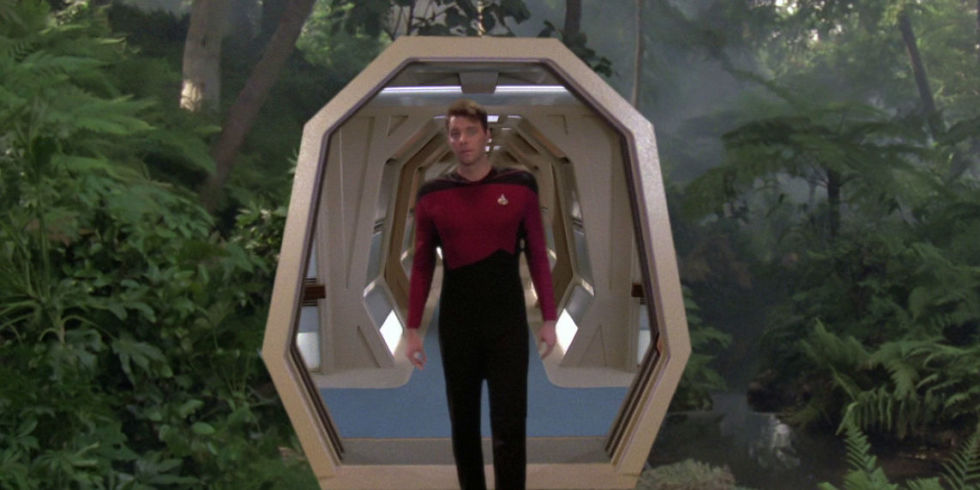

Multiple Part Post
This post is a multiple part post. I have labeled them…
- The Geography of Heaven; Journey of Souls – 1a
- The Geography of Heaven; Journey of Souls – 1b
- The Geography of Heaven; Journey of Souls – 1c
- The Geography of Heaven; Journey of Souls – 1d – This post.
- The Geography of Heaven; Journey of Souls – 1e
The Intermediate Soul
ONCE our souls advance past Level II into the intermediate ranges of development, group cluster activity is considerably reduced. This does not mean we return to the kind of isolation we saw with the novice soul. Souls evolving into the middle development levels have less association with primary groups because they have acquired the maturity and experience for operating more independently. These souls are also reducing the number of their incarnations.
The physical world is but a very small part of the entire universe. To absolutely understand what is going on, we have to accept that much of what is truth is beyond our observational capabilities as humans.
Within Levels III and IV we are at last ready for more serious responsibilities. The relationship we have with our guides now changes from teacher-student to one of colleagues working together. Since our old guides have acquired new student groups, it is now our turn to develop teaching skills which will eventually qualify us for the responsibilities of being a guide to someone else.
I have said the transitional stages of Levels II and IV are particularly difficult for me in pinpointing a soul’s development. For instance, some Level IV souls begin targeting themselves toward primary cluster teacher training while still in Level III, while other subjects who are clearly Level IV’s find they are unsuited to be effective guides.
Despite their high standards of morality and conduct, entities who have reached the intermediate levels of maturity are modest about their achievements. Naturally, each case is different, but I notice more composure with clients in this stage and above. I see trust rather than suspicion toward the motives of others on both a conscious and subconscious level. These people demonstrate a forward-looking attitude of faith and confidence for the future of humanity, which encourages those around them.
My questions to the more mature soul are directed to esoteric ideas of purpose and creation. I admit to taking advantage of the higher knowledge possessed by these souls for the sort of spiritual information others lack. There have been clients who have told me they felt I pushed them rather hard in drawing out their spiritual memories and I know they are right.
The more advanced souls of this world possess remarkable comprehension of a universal life plan. I want to learn as much as possible from them.
My next case falls into the upper portion of Level III development, radiating a yellow energy devoid of any reddish tones.
This client was a small, nondescript man nearly fifty years old.
His demeanor was quietly courteous towards me when we met, and I thought him a trifle solemn. I felt his unassuming detachment was somewhat studied, almost as a cover for stronger emotions. The most striking feature about him was his dark, morose eyes, which grew more intense as he began to talk about himself in a direct and persuasive manner.
He told me he worked for a charitable organization dispensing food to the homeless, and that he had once been a journalist. This client had traveled quite some distance to discuss with me his concern over a decline in enthusiasm for his work. He said he was tired and wanted to spend the rest of his life quietly alone. His first session involved a review of the highlights of many past lives so we could better evaluate a proper course for the remainder of his current life.
I began by regressing the subject rapidly through a series of early lives starting from his first life as a Cro-Magnon man in a Stone Age culture some 30,000 years ago. As we moved forward in time, I noted a consistency of lone-wolf behavior patterns as opposed to normal tribal integration.
From about 3,000 BC to 500 BC, my client lived a number of lives in the Middle East during the rise of the early city states in Sumerian, Babylonian, and Egyptian cultures. Nevertheless, even in lives as a woman, this subject often avoided family ties, including having no children. As a man, he showed a preference for nomadism.
By the time we reached a life in Europe during the Dark Ages, I was becoming accustomed to a rebellious soul resisting tyrannical societies. During his lives, my subject worked to uplift people from fear, while remaining non-aligned to opposing factions. Suffering hardships and many setbacks, he continued as a wanderer with an obsession for freedom of movement.
Some lives were not too productive, but during the twelfth century I found him in Central America in the body of an Aztec, organizing a band of Indians against the oppressions of a high priest. He was killed in this setting as a virtual outcast, while promoting non-violent relations between tribes who were traditional enemies.
In the fourteenth century, this soul was a European chronicler, traveling the silk road to Cathay to gain understanding of the peoples of Asia. Always facile with languages (as he is today), my client died in Asia as an old man happily living in a peasant village.
In Japan, at the beginning of the seventeenth century, he was a member of the clan of the Bleeding Crane. These men were respected, independent Samurai mercenaries. At the end of this life my subject was living in seclusion from the ruling Tokugawa shoguns, because he had advised their weaker opponents on battle strategy.
Frequently the outsider, always an explorer searching for truth across many lands, this soul continued to seek a rational meaning to life while giving aid to those he met along the way.
I was surprised when he popped up as the wife of an American farmer on the frontier in the nineteenth century. The farmer died soon after their marriage. I learned my subject had deliberately incarnated to be a widow with children, tied to a piece of property, as an exercise in the loss of mobility.
When this part of his session ended I knew I was working with a more advanced, older soul, even though he had a great many lives we did not review.
Since this soul is approaching Level IV, I would not have been surprised if his first appearance on Earth had gone back 70,000 years rather than half that amount of time. However, as I have mentioned, it is not an absolute prerequisite that souls have hundreds of physical lives in order to advance. I once had a client who entered into a Level III state of awareness after only 4,000 years-an outstanding performance.
I talked to my client about his current life and his customary methods of learning in previous lives. He explained he had never been married, and that social non- alignments worked best for him.
I suggested a few alternatives for his consideration.
Primarily, I felt his lack of intimacy with people in too many lives was obstructing his progress. When this session ended, he was anxious that we explore his mind further for perceptions about the spirit world in another session.
Upon his arrival the next day, I placed him in a superconscious state and we went back to work.
Case 22 – An older soul.
Dr. N: By what name are you called in the spirit world?
S: I am called Nenthum.
Dr. N: Nenthum, do you have spirits around you right now or are you alone?
S: (pause) I am with two of my long-time companions.
Dr. N: What are their names?
S: Raoul and Senji.
Dr. N: And are the three of you part of a larger spiritual group of souls working together?
S: We were … but now the three of us work… more by ourselves.
Dr. N: What are the three of you doing at this moment?
S: We are discussing the best ways to help each other during our incarnations.
Dr. N: Tell me what you do for each other.
S: I help Senji to forgive herself for mistakes and appreciate her own worth. She needs to stop being a mother-figure all the time on Earth.
Dr. N: How does she assist you?
S: To… see my lack of a sense of belonging.
Dr. N: Give me an example of Senji’s actions to assist you with this issue.
S: Well, she was my wife in Japan after my days as a warrior were over. (something is troubling Nenthum, and after a pause he adds the following) Raoul likes to pair with Senji and I am usually alone.
Dr. N: What about Raoul, how do you two help each other?
S: I help him with patience and he helps me with my tendency to avoid community life.
Dr. N: Are you always two males and a female in your incarnations on Earth?
S: No, we can change-and do-but this is comfortable for us.
Dr. N: Why are the three of you working independently from the rest of your spiritual group?
S: (pause) Oh, we see them here… some have not gone forward with us … a few others are further ahead of us in their tasks.
Dr. N: Do you have a guide or teacher?
S: (in a soft tone) She is Idis.
Dr. N: It sounds to me as if you have a high regard for her. Do you communicate well with Idis?
S: Yes I do-not that we don’t have our disagreements.
Dr. N: What is the main area of conflict between the two of you?
S: She doesn’t reincarnate much, and I tell her she should have more direct exposure to current conditions on Earth.
Dr. N: Are you mentally in tune with Idis to such an extent that you know all about her background training as a guide?
S: (shakes head while pondering) It isn’t that we can’t ask questions … but we can only question what we know. Idis reveals to me what she thinks is relevant to my own experience.
Dr. N: Are guides able to screen their thoughts so you can’t read their minds completely?
S: Yes, the older ones get proficient at that-knowing how to filter things we don’t need to know because this knowledge would confuse us.
Dr. N: Will you learn to filter images?
S: I already have … a little.
Dr. N: This must be why I have had many people tell me they have not been given definitive answers by their guides to all their questions.
S: Yes, and the intent of the question is important … when it was asked and why. Perhaps it was not in their best interests to be given certain information which might disrupt them.
Dr. N: Aside from her teaching techniques, are you fond of Idis in terms of her identity?
S: Yes … I just wish she would agree to come with me… once.
Dr. N: Oh, you would like to actually have an Earth incarnation with her?
S: (grins mischievously) I have told her we might relate better here if she would consent to come to Earth sometime and mate with me.
Dr. N: And what does Idis say to that suggestion?
S: She laughs and says she will think about it-if I can prove to her that it would be productive.
At this junction I ask Nenthum how long Idis has been associated with him and learn she was assigned these three entities when they moved into Level III.
Nenthum, Raoul, and Senji are also under the tutelage of a beloved older master guide who has been with them since the beginning of their existence.
It would be inaccurate to assume that more advanced spirits lead lonely spiritual lives. This subject told me he was in contact with many souls. Raoul and Senji were simply his closest friends.
Levels III and IV are significant stages for souls in their development because now they are given increased responsibilities for younger souls. The status of a guide is not given to us all at once, however. As with many other aspects of soul life, we are carefully tested. The intermediate levels are trial periods for potential teachers. While our aura is still yellow, our mentors assign us a soul to look after, and then evaluate our leadership performance both in and out of physical incarnations.
Only if this preliminary training is successful are we allowed to function even at the level of a junior guide.
Not everyone is suited for teaching, but this does not keep us from becoming an advanced soul in the blue section. Guides, like everyone else, have different abilities and talents, as well as shortcomings.
By the time we reach Level V, our soul aptitudes are well known in the spirit world. We are given occupational duties commensurate with our abilities, which I will go into later in this chapter. Different avenues of approach to learning eventually bring all of us to the same end in acquiring spiritual wholeness. The richness of diversity is part of a master plan for the advancement of every soul, and I am interested in how Case 22 is progressing in Level III.
Dr. N: Nenthum, can you tell me if Idis is preparing you to be a guide, assuming you have an interest in that activity?
S: (quick response) I do have an interest.
Dr. N: Oh, then are you developing as a guide yourself?
S: (modestly) Don’t make too much of it. I’m really no more than a caretaker … helping Idis and taking directions.
Dr. N: Do you try and imitate her teaching style?
S: No, we are different. As an apprentice-a caretaker-I couldn’t do what she is able to accomplish, anyway.
Dr. N: When did you know you were ready to be a caretaker and begin assisting others spiritually?
S: It’s an … awareness which comes over you after a great number of lives … that you are more in balance with yourself than previously, and are able to aid people as a spirit and in the flesh.
Dr. N: Are you operating in or out of the spirit world as a caretaker at this time?
S: (has difficulty in forming a response) I’m out … in two lives.
Dr. N: Are you living in two parallel lives now?
S: Yes, I am.
In this instance, the subject states that this is exactly what has happened, and that his soul created multiple consciousnesses to occupy multiple bodies at the same instance.
The Doctor Newton assumes that this is on the same world, at the same time. But it could be at the same time, but on different world-lines.
The advantage of this is rapid growth in a smaller instance of time. But that can also be fraught with dangers as well.
Dr. N: Where are you living in this other life?
S: Canada.
Dr. N: Is geography important to your Canadian assignment?
S: Yes, I picked a poor family in a rural community where I would be more indispensable. I’m in a small mountain town.
Dr. N: Give me the details of this Canadian life and your responsibilities.
S: (slowly) I’m … taking care of my brother Billy. His face and hands were horribly burned by a flash fire from a kitchen stove when he was four years old. I was ten when it happened.
Dr. N: Are you the same age in the Canadian life as you are now in your American one?
S: About the same.
Dr. N: And your prime assignment in the Canadian life?
S: To care for Billy. To help him see the world past his pain. He is almost blind and his facial disfigurement causes him to be rejected by the community. I try to open him to an acceptance of life and to know who he really is from the inside. I read to him and go for walks in the forest holding his arm. I don’t hold his hands because they are so damaged.
Dr. N: What about your Canadian parents?
S: (without boasting) I am the parent. My father left after the fire and never came back. He was a weak man who was not kind to the family even before the fire. My mother’s soul is not very… capable in her body. They need someone with seasoning.
Dr. N: Someone physically strong?
S: (laughing) No, I’m a woman in Canada. I’m Billy’s sister. My mother and brother require someone mentally tough to hold the family together and give them a course to follow.
Dr. N: How do you provide for the family?
S: I am a baker and I’ll never marry, because I can’t leave them.
Dr. N: What is your brother’s major lesson?
S: To acquire humility without being crushed by a life of little self-gratification.
Dr. N: Why didn’t you take the role of your burned brother? Wouldn’t that scenario provide you with the more difficult challenge?
S: (grimacing) Hmm-I’ve already been through that one!
Note: This subject has been physically injured in a number of past lives.
Dr. N: Yes, I suppose you have. I wonder if Billy’s soul was ever involved with physically hurting you in one of your past lives?
S: As a matter of fact, he did in one of them. When I was the sufferer another caretaker stayed with me and I was a grateful receiver. Now it is Billy’s turn and I am here for him.
Dr. N: Did you know in advance your brother was going to be incapacitated before you came into the Canadian life?
S: Sure, Idis and I discussed the whole situation. She said Billy’s soul would require a caretaker, and since I had negative contact with this soul before in another life, I welcomed the job.
Dr. N: Besides the karmic lesson for Billy’s soul, there are some for you too, in terms of your being in the role of a woman who is tied down. You can’t just take off and roam around as you often do in your lives.
S: That’s true. The degree of difficulty in a life is measured by how challenging the situation is for you, not others. For me, being Billy’s caretaker is harder than when I was on the receiving end with another soul as my caretaker.
Dr. N: Give me the most difficult factor of this assignment for you as a caretaker.
S: To sustain a child … through their helplessness … to adulthood … to teach a child to confront torment with courage.
Dr. N: Billy’s life is an extreme example, but it does seem Earth’s children have much physical and emotional pain to go through.
S: Without addressing and overcoming pain you can never really connect with who you are and build on that. I must tell you, the more pain and adversity which come to you as a child, the more opportunity to expand your potential.
Dr. N: And how are things working out for you as a caretaker in Canada?
S: There is a more difficult set of choices to be made in the Canadian family-unlike my American life. But, I have confidence in myself … to put my comprehension to practical use.
Dr. N: Did Idis encourage or discourage your wanting to accelerate development by living parallel lives?
S: She is always open about this … I haven’t done it too much in the past.
Dr. N: Why not?
S: Life combinations can be tiring and divisive. The effort may become counter- productive with diminished returns for both lives.
Dr. N: Well, I see that you are helping people in both your lives today, but have you ever lived contrasting lives where you did poorly in one life and better in another at the same time?
S: Yes, although that was a long time ago on Earth. This is one of the advantages of life combinations. One life can offset the other. Still, doing this can be rough going.
Dr. N: Then why do the guides permit parallel lives?
S: (scowling at me) Souls are not in a rigid bureaucratic environment. We are allowed to make mistakes in judgement and learn from them.
Dr. N: I have the impression you think the average soul is better off living one life at a time.
S: I would say yes, in most instances, but there are other motivations to cause us to speed up incarnations.
Dr. N: Such as … ?
S: (amused) The rewards for bunching up lives can allow for more reflection out of incarnation.
Dr. N: You mean the rest periods between lives might last longer for us after concurrent lives?
S: (smiles) Sure, it takes longer to reflect on two lives than one.
Dr. N: Nenthum, I just have a couple more questions on the mechanics of soul- splitting. How do you see the manner in which you divide your soul energy into various parts?
S: We are … as particles … of energized units. We originated out of one unit.
Dr. N: What was the original unit.
S: The maker.
Dr. N: Does each part of your soul remain intact, complete within itself?
S: Yes, it does.
Dr. N: Do all parts of our soul energy go out of the spirit world when we incarnate?
S: Part of us never leaves, since we do not totally separate from the maker.
Dr. N: What does the part that remains in the spirit world do while we are on Earth in one or more bodies?
S: It is … more dormant … waiting to be rejoined to the rest of our energy.
Most of my colleagues who work with past life clients have listened to overlapping time chronologies from people living on Earth in two places at once. Occasionally, there are three or more parallel lives. Souls in almost any stage of development are capable of living multiple physical lives, but I really don’t see much of this in my cases.
Well… sorry, but that is wrong.
We possess multiple consciousnesses and it id difficult (being in the human physical form) to think otherwise. Yet, when your consciousness is free of the physical universe, and in the non-physical universe, the ability to have two consciousnesses at one time is not a problem at all.
In fact, you can consider ever past life to be a single unified consciousness. Thus you can remember all the consciousnesses together… if it is your desire. Most people prefer to segregate them to help form their resultant base personality at any given moment.
Many people feel the idea of souls having the capacity to divide in the spirit world and then attaching to two or more human bodies is against all their preconceptions of a singular, individualized spirit.
I confess that I too felt uncomfortable the first time a client told me about having parallel lives.
I can understand why some people find the concept of soul duality perplexing, especially when faced with the further proposition that one soul may even be capable of living in different dimensions during the same relative time.
What we must appreciate is, if our souls are all part of one great oversoul energy force which divides, or extends itself to create our souls, then why shouldn’t the offspring of this intelligent soul energy have the same capacity to detach and then recombine?
Collecting information about spiritual activity from souls who are in the higher stages of development is sometimes frustrating. This is because the complex nature of memory and knowledge at these levels can make it difficult to sift out what these people recognize and won’t tell me, from what they really don’t know.
Case 22 was both knowledgeable and open to my questions. This case is compatible with other accounts in my files about the diversity of soul training in the spirit world.
Dr. N: Nenthum, I want to turn now to your activities in the spirit world when you are not so busy with Earth incarnations, interacting in souls groups and learning to be a guide. Can you tell me of other spiritual areas in which you are occupied?
S: (long pause) Yes, there are other areas … I know of them
Dr. N: How many?
S: (cautiously) I can think of four.
Dr. N: What would you call these areas of activity?
S: The World Without Ego, the World of All Knowing, the World of Creation and Non-creation, and the World of Altered Time.
Dr. N: Are they worlds which exist in our physical universe?
S: One does, the rest are non-dimensional spheres of attention.
Dr. N: All right, let’s start with the non-dimensional spheres. Are these three areas in the spirit world for the use of souls?
S: Yes.
Dr. N: Why do you call all these spiritual areas worlds?
S: I see them as … habitations for spiritual life.
Dr. N: So, three of them are mental worlds?
S: Yes, that’s what they are.
Dr. N: What is the World Without Ego?
S: It’s the place of learning to be.
Dr. N: I have heard of it, expressed in different ways. Doesn’t it involve the beginners?
S: Yes, the newly created soul is there to learn who they are. It’s the place of origin.
Dr. N: Are the ego-identities passed out at random, or is there a choice for beginner souls?
S: The new soul is not capable of choice. You acquire your character based upon the way your energy is … combined … put together for you.
Dr. N: Is there some sort of spiritual inventory of characteristics that are assigned to souls-so much of one type, so much of another?
S: (long pause) I think many factors are considered in the allocations of that which makes us who we are. What I do know is, once given, ego becomes a covenant between oneself and the givers.
Dr. N: What does that mean?
S: To do the best I can with who I am.
Dr. N: So, the purpose of this world is the distribution of soul identity by advanced beings?
S: Yes, the new soul is pure energy with no real Self yet. The World Without Ego provides you with a signature.
Dr. N: Then why do you call it the World Without Ego?
S: Because the newly created souls arrive with no ego. The idea of Self has not come into the new soul’s consciousness. It is here where the soul is offered meaning to its existence.
Dr. N: And does the creation of souls with personhood go on continually?
S: As far as I know, yes.
Dr. N: I want you to answer this next question carefully for me. When you acquired your particular identity as a soul, did that automatically mean you were slated for Earth incarnations in human form?
S: Not specifically, no. Planets don’t last forever.
Dr. N: I wondered if certain types of souls have an affinity for specific forms of physical life in the universe?
S: (pause) I won’t argue against that.
Dr. N: In your beginnings, Nenthum, were you given the opportunity to choose other planetary hosts besides humans on Earth?
S: Ah … as a new soul … the guides assist in those selections. I was drawn to human beings.
Dr. N: Were you given other choices?
S: (long pause) Yes … but it’s not very clear at the moment. They usually start you on an easy world or two, without much to do. Then I was offered service on this severe planet.
Dr. N: Earth is considered severe?
S: Yes. On some worlds you must overcome physical discomforts-even suffering. Others lean toward mental contests. Earth has both.
We get kudos for doing well on the hard worlds. (smiling) We are called the adventurous ones by those who don’t travel much.
Dr. N: What really appeals to you about Earth?
S: The kinship humans have for each other while they struggle against one another… competing and collaborating at the same time.
Dr. N: Isn’t that a contradiction?
S: (laughs) That’s what appeals to me-mediating quarrels of a fallible race which has so much pride and need of self-respect. The human brain is rather unique, you know.
Dr. N: How?
S: Humans are egocentric but vulnerable. They can make their character mean and yet have a great capacity for kindness. There is weak and courageous behavior on Earth. It’s always a push-me pull-you tug-of-war going on with human values. This diversity suits my soul.
Dr. N: What are some of the other things about human hosts which might appeal to the souls who are sent to Earth?
S: Hmm… those of us developing on Earth have … a sanction to help humans know of the infinite beyond their life and to assist them in expressing true benevolence through their passion. Having a passion to fight for life-that’s what is so worthwhile about humanity.
Dr. N: Humans also have a great capacity for malevolence.
S: That’s part of the passion. But it’s evolving too, and when humans experience trouble, they can be at their best and are … quite noble.
Dr. N: Perhaps it is the soul which fosters the positive characteristics you suggested?
S: We try to enhance what is already there.
Dr. N: Does any soul ever go back to the World Without Ego after they have once been there and acquired identity?
S: (uncomfortable) Yes … but I don’t want to get into that…
Dr. N: Well, then we won’t, but I have been told some souls do return if their conduct during physical assignments is consistently irregular. I have the impression they are considered defective and are returned to the factory for a kind of spiritual prefrontal lobotomy?
S: (subject shakes his head with annoyance) I am offended by that description. Where did you get such a notion? Those souls who have developed severe obstacles to improvement are mended by the restoration of positive energy.
Dr. N: Is this procedure just for Earth souls?
S: No, young souls from everywhere may require restoration as a last resort.
Dr. N: Are these restored spirits then allowed to return to their respective groups and eventually go back to incarnating on physical worlds?
S: (sighs deeply) Yes.
Dr. N: How would you compare the World Without Ego to the World of All Knowing?
S: They are opposites. This world is not for young souls.
Dr. N: Have you been to the World of All Knowing?
S: No, I’m not ready. I am only aware of it as a place we strive for.
Dr. N: What do you know about this spiritual area?
S: (long pause) It is a place of contemplation … the ultimate mental world of planning and design. I can tell you little about this sphere except it is the final destination of all thought. The senses of all living things are coordinated here.
Dr. N: Then the World of All Knowing is abstract in the highest form?
S: Yes, it’s about blending content with form-the rational with ideals. It is a dimension where the realization of all our hopes and dreams is possible.
Dr. N: Well, if you can’t go there yet, how come you know about it?
S: We get … glimpses … as an incentive to encourage us to make that final effort to finish our work and join the masters.
The foundation of the spirit world is a place of knowing and has been alluded to under different names by clients. I am given only bare references to this universal absolute, because even my advanced subjects have no direct experience there. All souls are anxious to reach and be absorbed by this nucleus, especially as they draw closer and are enticed by what little they can see.
I’m afraid the World of All Knowing can only be fully understood by a non-reincarnating soul above Level V.
Dr. N: If the World Without Ego and the World of All Knowing are at opposite ends of a soul’s experience, then where does the World of Altered Time fall?
S: This sphere is available to all souls because it represents their own physical world. In my case, it is Earth.
Dr. N: Oh, this must be the physical dimension you told me about?
S: No, the sphere of Earth is only simulated for my use.
Dr. N: Then all souls in the spirit world wouldn’t study the same simulated world?
S: No, each of us studies our own geographical planet, where we incarnate. They are physically real … temporarily.
Dr. N: And you don’t physically live on this simulated world which appears as Earth-you only use it?
S: Yes, that’s right-for training purposes.

Dr. N: Why do you call this third sphere the World of Altered Time?
S: Because we can change time sequences to study specific events.
Dr. N: What is the basic purpose of doing this?
S: To improve my decisions for life. This study makes me more discriminating and prepares me for the World of All Knowing.
Note: Subjects frequently use the term “world” to describe non-physical spatial work areas. These regions can be tiny or indescribably large in relation to the soul and may involve different dimensions. I believe there are separate realities for different learning experiences outside the restrictions of time. The coexistence of past, present, and future time in spiritual settings suggested by this case will be explored further in the next two chapters with Cases 23 and 25.
Dr. N: We haven’t talked about the World of Creation and Non-creation. This must be the three-dimensional physical world you spoke of earlier.
S: Yes, and we enjoy using it as well.
Dr. N: Is this world intended for the use of all souls?
S: No, it is not. I’m just starting to apply myself there. I am considered a newcomer.
Dr. N: Well, before we get into that, I want to ask if this physical world is the same as Earth.
S: No, it is a little different. It’s larger and somewhat colder. There is less water- fewer oceans, but similar.
Dr. N: Is this planet further from its sun than Earth is from our sun?
S: Yes.
Dr. N: If I could call this physical world Earth II, since it seems to be geographically similar to the Earth we know, would it be near Earth I in the sky?
S: No.
Dr. N: Where is Earth II in relation to Earth I?
S: (pause) I can’t tell you.
Dr. N: Is Earth II in our Milky Way galaxy?
S: (long pause) No, I think it’s further away.
Dr. N: Could I see the galaxy Earth II is located in with a telescope from my backyard?
S: I… would think so.
Dr. N: Would you say the galaxy containing this physical world is shaped like a spiral as our galaxy, or is it elliptical? How would it look in a telescope from a long way off?
S: … as a great extended … chain … (with a troubled expression) I can’t tell you more.
Note: As an amateur stargazer who uses a large reflector telescope designed for deep sky objects, I am always inquisitive when a session takes an astronomical turn. Client responses to these kinds of questions usually fall short of my expectations. I am never sure if this is due to blocking by guides or the subject’s lack of a physical frame of reference between Earth and the rest of our universe.
Dr. N: (I throw out a leading question) I suppose you go to Earth II to reincarnate with some sort of intelligent being?
S: (loudly) No! That’s just what we don’t want to do there.
Dr. N: When do you go to Earth II?
S: Between my lives on this Earth.
Dr. N: Why do you go to Earth II?
S: We go there to create and just enjoy ourselves as free spirits.
Dr. N: And you don’t bother the inhabitants of Earth II?
S: (enthusiastically) There are no people … it’s so peaceful … we roam among the forests, the deserts, and over oceans with no responsibilities.
Dr. N: What is the highest form of life on Earth II?
S: (evasive) Oh … small animals … without much intelligence.
Dr. N: Do animals have souls?
S: Yes, all living things do-but they have very simple fragments of mind energy.
Dr. N: Has your soul, and that of your friends, evolved from using lower forms of physical life on Earth I after your creation?
S: We don’t know for sure, but none of us thinks so.
Dr. N: Why not?
S: Because intelligent energy is arranged by … a precedence of life. Plants, insects, reptiles-each is in a family of souls.
Dr. N: And all categories of living things are separated from each other?
S: No. The maker’s energy joins the units of every living thing in existence.
Dr. N: Are you involved with this element of creation?
S: (startled) Oh, no!
Dr. N: Well, who is selected to visit Earth II?
S: Those of us who are connected with Earth come here. This is a vacation spot compared to Earth.
Dr. N: Why?
S: There is no fighting, bickering, or striving for supremacy. There is a pristine atmosphere and all life is … quiet. This place gives us an incentive to return to Earth and make it more peaceful, too.
Dr. N: Well, I do see how this Garden of Eden would allow you to rest and be carefree, but you also said you come here to create.
S: Yes, we do.
Dr. N: It is no accident then that souls from Earth come to a world that is so similar geographically?
S: That’s right.
Dr. N: Do other souls, who are not earthbound, go to physical worlds which resemble those planets where they incarnate?
S: Yes … younger worlds with simpler organisms … to learn to create without any intelligent life around.
Dr. N: Go on.
S: We can experiment with creation and see it developing here. It’s as if you were in a lab where you can form physical things from your energy.
Dr. N: Do these physical things resemble what you might see on Earth I?
S: Yes, only on Earth. That’s why I am here.
Dr. N: Start with your arrival on Earth II and explain to me what your soul does first.
S: (balks at my question and then finally says) I’m … not very good.
Note: Since this subject is experiencing resistance, I take a few minutes for reconditioning and end with the following: “On the count of three you will feel more relaxed about telling me what you and I consider appropriate for my knowledge. One, two, three!” I repeat my question.
S: I look to see what I am supposed to make on the ground in front of me. Then I mold the object in my mind and try and create the same thing with small doses of energy. The teachers assist us with … control. I’m supposed to see my mistakes and make corrections.
Dr. N: Who are the teachers?
S: Idis and Mulcafgil (subject’s highly advanced guide) … and there are other instructors around … I don’t know them very well.
Dr. N: Try to be as clear as possible. What exactly are you doing?
S: We… form things…
Dr. N: Living things?
S: I’m not ready for that yet. I experiment with the basic elements-you know, hydrogen and oxygen-to create planetary substance … rocks, air, water … keeping everything very small.
Dr. N: Do you actually create the basic elements of our universe?
S: No, I just use the elements available.
Dr. N: In what way?
S: I take the basic elements and charge them with impulses from my energy … and they can change.
Dr. N: Change into what?
S: (simply) I’m good with rocks …
Dr. N: How do you form rocks with your energy?
S: Oh … by learning to heat and cool … dust … to make it hard.
Dr. N: Do you make the minerals in the dust?
S: They do that for you … the teachers give us that stuff … gas vapors for water making … and so on …
Dr. N: I want to understand this clearly. Your work consists of learning to create by causing heat, pressure, and cooling from your energy flow?
S: That’s about right-by alternating our currents of energy radiation.
Dr. N: So, you don’t actually produce the substance of rock and water in some chemical way?
S: No, like I told you, my job is to transform things by … mixing what I am given. I play with the frequency and dosages of my energy-it’s tricky, but not too complicated …
Dr. N: Not complicated! I thought nature did those things?
S: (laughs) Who do you think nature is?
Dr. N: Well, who creates the basic elements of your experiments-the primary substances of physical matter?
S: The maker … and those creating on a grander scale than me.
Dr. N: Well, in a sense you are creating inanimate objects such as rocks.
S: Hmm… it’s more our trying to copy what we see in front of us what we know. (as an afterthought) I’m getting into plants but I can’t do them yet.
Dr. N: And you start small, experimenting until you get better?
S: That’s it. We copy things and compare them against the original so we can make larger models.
Dr. N: This all sounds like souls playing as children in a sandbox with toys.
S: (smiles) We are children. Directing an energy flow resembles the sculpturing of clay.
Dr. N: Are the other members of this creative training class from your original cluster group?
S: Some are. Most come from all over (the spirit world), but they have all incarnated on Earth.
Dr. N: Does everyone make the same things as you do?
S: Well, of course, some of us are better with certain things, but we help each other. The teachers come around and give us tips and advice on how to improve … but … (stops)
Dr. N: But, what?
S: (sheepishly) If I am clumsy and do a bad job, I disassemble some creations without showing them to Idis.
Dr. N: Give me an example.
S: Plants … I don’t apply my energy delicately enough to produce the proper chemical conversions.
Dr. N: You are not good with the formation of plant life?
S: No, so I undo my abominations.
Dr. N: Is this what you mean by uncreation? You can destroy energy?
S: Energy can’t be destroyed. We reassemble it and start over using different combinations.
Dr. N: I don’t see why the creator needs your help in creating.
S: For our benefit. We participate in these exercises so that when our work is judged to be of quality, hopefully we can make real contributions to life.
Dr. N: If we are all working up the ladder of development as souls, Nenthum, I am left with the impression the spirit world is one huge organizational pyramid with a supreme authority of power at the top.
S: (sighs) No, you are wrong. It is not a pyramid. We are all threads in the same long piece of fabric. We are all woven into it.
Dr. N: It’s hard for me to visualize fabric when there are so many levels of competency for souls.
S: Think of it as a moving continuum rather than souls being in brackets of highs and lows.
Dr. N: I always think of souls moving up in their existence.
S: I know you do, but consider us moving across
Dr. N: Give me something I can picture in my mind.
S: It’s as if we are all part of a universal train on a flat track of existence. Most of the souls on Earth are in one car moving along the track.
Dr. N: Are all other souls in different cars?
S: Yes, but all on the same track.
Dr. N: Where are the conductors such as Idis?
S: They move back and forth between the connected cars, but sit closer to the engine.
Dr. N: Where is the engine?
S: The maker? Up front, naturally.
Dr. N: Can you see the engine from your car?
S: (laughs at me) No, but I can smell the smoke. I can feel the engine rumbling along and I can hear the motor.
Dr. N: It would be nice if all of us were closer to the engine.
S: Ultimately, we will be.
I have found it is not necessary for souls to go to physical worlds when they begin using their energy in life creation training. Apparently, these exercises begin in group settings where souls find it easier to pool their energy with each other and their instructor. A subject explained the process this way…
“When I started, my group formed a circle around Senwa (guide). Collectively, we had to practice so hard to harmonize our thoughts and fine-tune our ability to all focus on one thing with the same intensity. One time we were working on a tree leaf after Senwa demonstrated how it should appear in front of us. As we directed our beams of energy for texture, color, and shape we kept messing up. We weren’t unified, so a small part of the leaf did not have the proper veining and pigmentation. I am very serious and kind of a perfectionist in my studies, but Nemi (the group jokester) was deliberately alternating his energy the wrong way to screw up the experiment for laughs and because he was tired of the lesson. We finally got him to behave and completed the assignment.”
From what I am able to determine, souls are expected to individually work with the forces of creation by the time they are solidly established in Level III.
Exposure to plant photosynthesis takes place before student souls work up the organic scale of life.
I am told that early creation training consists of souls learning relationships between substances to develop the ability of unifying their energy with different values in the elements. The formation of inanimate to animate objects from the simple to the complex is a long, slow process. Students are encouraged to create miniature planetary microhabitats for a given set of organisms which can adapt to certain environmental conditions.
With practice comes improvement, but not until they approach Level V do my clients begin to feel they might actually contribute to the development of living things. We will hear more about this with Case 23.
Some souls seem to have a natural gift for working with energy in their creation classes. My cases indicate ability in creation assignments does not mean a soul is at the same level of advancement in all other areas of the spiritual curricula. A soul may be a good technician in harnessing the forces of creation, but lack the subtle techniques of a competent guide. Perhaps this is why I have been given the impression that the highly advanced soul is allowed to specialize.
In the previous chapter, I explained some benefits of soul solitude and the last case gave us another example. Spiritual experience is not easily translated into human language.
Case 22 talks about the World of Altered Time as a means of transient planetary study. To someone in trance, it is the timeless mental world that is true reality while all else is an illusion created for various benefits. Other subjects at about the same level call this sphere “the space of transformation” or simply “rooms of recreation.” Here, I’m told, souls are able to meld their energy into animate and inanimate objects created for learning and pleasure.
One subject said to me, “I think of what I want and it happens. I know I’m being assisted. We can be anything familiar to our past experiences.
For instance, souls can become rocks to capture the essence of density, trees for serenity, water for a flowing cohesiveness, butterflies for freedom and beauty and whales for power and immensity. People deny these actions represent former earthly transmigrations.
I have also learned souls may become amorphous without substance or texture and totally integrate into a particular feeling, such as compassion, to sharpen their sensitivity.
Some subjects tell of being mystical spirits of nature including figures I associate with folklore, such as elves, giants and mermaids. Personal contact with strange mythological beasts are mentioned as well. Theses accounts are so vivid it is hard for me to simply label them as metaphoric.
Are the old folk tales of many races pure superstition, or manifestations of shared soul experience? I have the sense that many of our legends are the sympathetic memories of souls carried from other places to Earth long ago.
The Advanced Soul
PEOPLE who possess souls which are both old and highly advanced are scarce. Although I haven’t had the opportunity to regress many Blues in Level V, they are always stimulating to work with because of their comprehension and far-reaching spiritual consciousness.
The fact is, a person whose maturity is this high doesn’t seek out a regression therapist to resolve life-plan conflicts.
In most cases, Level V’s are here as incarnated guides. Having mastered the fundamental issues most of us wrestle with daily, the advanced soul is more interested in making small refinements toward specific tasks.
We may recognize them when they appear as public figures, such as a Mother Teresa; however, it is more usual for the advanced soul to go about their good works in a quiet, unassuming manner. Without displaying self-indulgence, their fulfillment comes from improving the lives of other people.
They focus less on institutional matters and more on enhancing individual human values. Nevertheless, Level V’s are also practical, and so they are likely to be found working in a cultural mainstream which allows them to influence people and events.
I have been asked if most people who are sensitive, aesthetic, and particularly right- brained have advanced souls since individuals with these characteristics often appear to be at odds with the wrongs of an imperfect world.
I see no correlation here.
Being emotional, appreciating beauty, or having extrasensory impressions- including psychic talent-does not necessarily denote an advanced soul.
The mark of an advanced spirit is one who has patience with society and shows extraordinary coping skills. Most prominent is their exceptional insight.
This is not to say life has no karmic pitfalls for them, otherwise the Level V probably wouldn’t be here at all.
They may be found in all walks of life, but are frequently in the helping professions or combating social injustice in some fashion. The advanced soul radiates composure, kindness, and understanding toward others. Not being motivated by self-interest, they may disregard their own physical needs and live in reduced circumstances.
The individual I have chosen to represent the Level V soul is a woman in her mid- thirties who works for a large medical treatment facility specializing in chemical substance abuse. I was introduced to this woman by a colleague who told me of her skill in guiding recovering drug addicts into an improved state of self-awareness.
At our first meeting, I was struck by the woman’s expression of serenity while surrounded by chaotic emergencies at her place of employment. She was tall and excessively thin, with flaming red hair which stuck out in all directions. Although warm and friendly, there was about her an air of impenetrability. Her clear, luminous gray eyes were those of one who sees small things unnoticed by ordinary folk. I felt she was looking into rather than at me.
My colleague suggested the three of us have lunch because this woman was interested in my studies of the spirit world.
She told me that she had never been hypnotically regressed but there was the sense of a long spiritual genealogy through her own meditations. She thought our meeting was no accident on her own learning path and we came to an agreement to explore her spiritual knowledge.
A few weeks later she arrived at my office. Clearly, this woman had no compelling desire for a long chronology of past life history. I decided to get a brief sketch of her earliest lives on Earth to use as a springboard into superconscious memories.
She rapidly entered into a deep trance and made instant contact with her inner self.
Almost at once, I found this woman’s span of incarnations staggering, going far back into the distant past of human life on Earth. Touching on her earliest memories, I came to the conclusion her first lives occurred at the beginning of the last warm interglacial period which lasted from 130,000 to 70,000 years ago, before the last great Ice Age spread over the planet.
During the warmer climate of the middle Paleolithic period of Earth’s history, my subject described living in moist, sub-tropical savannas near hunting, fishing, and plant-gathering areas.
Later, some 50,000 years ago, when continental sheets of ice had again changed Earth’s climate, she spoke of living in caves and enduring bitter cold.
Leaping rapidly over large blocks of time, I found her physical appearance changing from a slightly bent to a more erect posture. As we moved forward in time, I directed her to look into pools of water and feel her body while reporting back to me.
Her sloping forehead became more vertical over thousands of years in different bodies.
Supraorbital ridges above the eyes grew less pronounced as did body hair and the massive jaws of archaic man. In her many lives as both men and women, I was given enough information on habitat, the use of fire, tools, clothes, food, and ritualistic tribal practices for rough anthropological dating.
Paleontologists have estimated Homo erectus, an ape-like ancestor of modern humans, appeared at least 1.7 million years ago. Have souls been incarnating on Earth for this long, utilizing the bodies of these primitive bipeds we call hominids?
A few of my more advanced clients declare that highly advanced souls who specialize in seeking out suitable hosts for young souls, evaluated life on Earth for over a million years.
My impression is these examiner souls found the early hominid brain cavity and restricted voice box to be inadequate for soul development earlier than some 200,000 years ago.
Archaic Homo sapiens, whom we call humans, evolved several hundred thousand years ago.
Within the last 100,000 years, we find two clear signs of spiritual consciousness and communication. These are burial practices and ritualistic art, as found in carved totems and rock drawings. There is no anthropological evidence that these practices existed on Earth before Neanderthal peoples.
Souls eventually made us human, not the reverse.
One of my advanced subjects remarked, “Souls have seeded the Earth in different cycles.” A composite of information collected from a wide range of clients suggests to me that the land masses we know today deviate from earlier continents, drowned, perhaps, by cataclysmic volcanic or magnetic upheavals.
For instance, the Azores in the Atlantic Ocean have been said to represent the tops of mountains of the submerged continent of Atlantis. Indeed, I have had subjects discuss being in ancient lands on Earth that I cannot identify with modern geography.
Thus, it is possible souls existed in bodies more advanced than Homo erectus, who died out about a quarter of a million years ago, with the fossilized evidence hidden from us today by geological change.
However, this hypothesis means the physical evolution of humans was an up, down, up affair, which I think is unlikely.
I now moved my subject into an African life around 9,000 years ago, which she said was an important milestone in her advancement.
This was the last life she was to spend with her guide, Kumara. Kumara was an advanced soul herself at the time of this life, counseling a benevolent tribal chief as his influential wife. I tentatively located their land as the highlands of Ethiopia. Apparently, my subject had known Kumara in a number of earlier lives covering thousands of years during Kumara’s final incarnations on Earth. Their association in human form ended when my subject died, saving Kumara’s life on a river boat, by throwing herself in front of an enemy spear.
Full of love, Kumara still appears to this subject as a large woman, with skin of polished mahogany and a shock of white hair crowned by a headdress of feathers. She is practically nude, except for a strip of animal hide around her ample middle.
On Kumara’s neck hangs a garish bunch of multi-colored stones, which she sometimes jiggles in my subject’s ear to get her attention during dreams in the middle of the night.
Kumara teaches by a technique of flashing symbolistic memories of prior lessons already learned in past lives. Old solutions to problems are mixed with new hypothetical choices in the form of metaphoric picture puzzles. By these means, Kumara tests her student’s considerable storehouse of knowledge during meditations and dreams.
I glanced at my watch. There was no more time for background information if I was going to allow for exploration of this woman’s after life experiences.
Rapidly I took her into superconsciousness, anticipating some interesting spiritual disclosures. She would not disappoint me.
Case 23 – Kumara
Dr. N: What is your spiritual name?
S: Thece.
Dr. N: And your spiritual guide kept her African name of Kumara?
S: For me, yes.
Dr. N: What do you look like in the spirit world?
S: A glowing fragment of light.
Dr. N: What exactly is the color of your energy?
S: Sky-blue.
Dr. N: Does your light have flecks of another color in it?
S: (pause) Some gold … not much.
Dr. N: How about Kumara’s energy color?
S: It’s violet.
Dr. N: How does light and color identify the quality of a soul’s spiritual attainment?
S: The intensity of mental power increases with the darker phases of light.
Dr. N: Where does the highest intensity of intelligent light energy originate from?
S: The knowledge by which the energy of darker light is extended to us comes from the source. Our light is attached to the source.
Dr. N: When you say source-you mean God?
S: That word has been misused.
Dr. N: How?
S: By too much personalizing, which makes the source less than it is.
Dr. N: What’s wrong with us doing that?
S: It takes the liberty of making the source too … human, although we are all part of its oneness.
Dr. N: Thece, I want you to reflect on the source as we talk about other aspects of soul life and the spirit world. Later, I will ask you more about this oneness. Now, let’s go back to the energy manifestations of souls. Why do spirits display two black glowing cavities for eyes when not showing their human forms? It seems so spooky to me.
S: (laughs and is more relaxed) That’s how Earth’s legends of ghosts came about- from these memories. Our energy mass is not uniform. The eyes you speak of represent a more concentrated intensity of thought.
Dr. N: Well, if the myths about ghosts are not so fanciful after all, then these black eye sockets must be useful extensions of their energy.
S: Rather than eyes … they are windows to old bodies … and all the physical extensions of former selves. This blackness is a … concentration of our presence. We communicate by absorbing the energy presence of each other.
Dr. N: When you return to the spirit world, do you have energy contact with other souls who may look like ghosts?
S: Yes, and appearance is a matter of individual preference. Of course there is always a multitude of thought waves around me-mingling with my returning energy, but I avoid too much contact.
Dr. N: Why?
S: It is not necessary for me to make attachments here. I will be alone for a while to contemplate and sort out any mistakes from my last incarnation, before talking to Kumara.
Note: This statement is typical of advanced souls returning to the spirit world, mentioned earlier in Case 9. However, this soul is so advanced she will have no deliberations with her guide until much later, and upon her request.
Dr. N: Perhaps we should talk about older souls for a minute. Does Kumara incarnate on Earth any more?
S: No, she doesn’t.
Dr. N: Do you know others like Kumara who were here during the early times on Earth and don’t come back any more?
S: (cautiously) A few… yes… many got on Earth early and got off before I came.
Dr. N: Did any stay?
S: What do you mean?
Dr. N: Advanced souls who keep coming back to life on Earth when they could stay in the spirit world.
S: Oh, you mean the Sages?
Dr. N: Yes, the Sages-tell me about them. (this is a new term for me, but I often pretend to know more than I do with advanced souls to elicit information)
S: (with admiration) They are the true watchers of Earth, you know to be here and keep watch over what is going on.
Dr. N: As highly advanced souls who continue to incarnate?
S: Yes.
Dr. N: Don’t the Sages get tired of still hanging around Earth?
S: They choose to stay and help people directly because they are dedicated to Earth.
Dr. N: Where are these Sages?
S: (wistfully) They live simple lives. I first came to know some of them thousands of years ago. Today it’s hard to see them … they don’t like cities much.
Dr. N: Are there many of them?
S: No, they live in small communities, or out in the open … in the deserts and mountains … in simple dwellings. They wander about, too …
Dr. N: How does one recognize them?
S: (sighs) Most people don’t. They were known as the oracles of truth in earlier times on Earth.
Dr. N: I know this sounds pragmatic, but wouldn’t these old, highly developed souls be more useful helping humankind in positions of international leadership rather than being hermits?
S: Who said they were hermits? They prefer to be with the common people who are most affected by the movers and shakers.
Dr. N: What is the feeling one gets when meeting a Sage on Earth?
S: Ah… you feel a special presence. Their power of understanding and the advice they give you is so wise. They do live simply. Material things mean nothing to them.
Dr. N: Are you interested in this sort of service, Thece?
S: Hmm … no, they are saints. I welcome the time when I can stop incarnating.
Dr. N: Perhaps the word Sage could also be applied to souls like Kumara, or even with the entities to whom she turns for knowledge?
S: (pause) No, they are different … they are beyond the Sages. We call them the Old Ones.
Note: I would place these beings beyond Level VI.
Dr. N: Are there many Old Ones working with souls at Kumara’s level and above?
S: I don’t think so… compared to the rest of us … but we feel their influence.
Dr. N: What do you feel in their presence?
S: (pensive) A… concentrated power of enlightenment… and guidance …
Dr. N: Could the Old Ones be embodiments of the source itself?
S: It is not for me to say, but I don’t think so yet. They must be close to the source. The Old Ones represent the purest elements of thought … engaging in the planning and arranging of … substances.
Dr. N: Could you clarify a bit more what you mean by these highly placed souls being close to the source?
S: (vaguely) Only that they must be close to conjunction.
Dr. N: Does Kumara ever talk about these entities who help her?
S: To me-only a little. She aspires to be of them, as we all do.
Dr. N: Is she getting close to the Old Ones in knowledge?
S: (faintly) She … approaches, as I approach her. It is slow assimilating with the source, because we are not complete.
Once the duties of a guide are fully established for the advancing soul, it is necessary for these entities to juggle two balls. Besides completing their own unfinished business with continued (though less frequent) incarnations, they must also help others while in a discarnated state. Thece talks to me about this aspect of her soul life.
Dr. N: When you are back in the spirit world and come out of your self-imposed isolation, what do you ordinarily do then?
S: I join with members of my company.
Dr. N: How many souls are in your company?
S: Nine.
Dr. N: (jumping to the next conclusion too quickly) Oh, so the ten of you are a group of souls under the leadership of Kumara?
S: No, they are my responsibility.
Dr. N: Then, these nine entities are students whom you teach?
S: you could say that
Dr. N: And they are all in one group (cluster) which, I assume, is your company?
S: No, my company is made up of two different groups.
Dr. N: Why is that?
S: They are in … different progressions (levels).
Dr. N: And yet, you are the spiritual teacher for all nine?
S: I prefer to call myself a watcher. Three of my company are also watchers.
Dr. N: Well, who are the other six?
S: (matter-of-factly) People who don’t watch.
Dr. N: I want to clarify this using my terms, if you will, Thece If you are a senior watcher, three of your company must be what I would call junior guides?
S: Yes, but the words senior and junior-that portrays us as authoritarian, which we are not!
Dr. N: My intention is not to denote rank, for me it is just an easy identification of responsibility. Consider the word senior as meaning an advanced teacher. I would call Kumara a master teacher or possibly an educational director.
S: (shrugs) That’s okay, I suppose, as long as director doesn’t mean dictator.
Dr. N: it doesn’t. Now, Thece, cast your mind to a place where you can see the energy colors of all your company. What do the six souls who are not watchers look like?
S: (smiles) Dirty snowballs!
Dr. N: If they are white in tone, what about the rest?
S: (pause) Well … two are rather yellowish.
Dr. N: We are one short. What about the ninth member?
S: That’s An-ras. He is doing quite well.
Dr. N: Describe his energy color.
S: He is … turning bluish … an excellent watcher … he will be leaving me soon
Dr. N: Let’s go to the opposite end of your company. What member are you most concerned about and why?
S: Ojanowin. She has the conviction from many lives that love and trust only bring hurt. (musing) She has fine qualities which I want to bring out but this attitude is holding her back.
Dr. N: Ojanowin is developing more slowly than the rest?
S: (protectively) Don’t misunderstand, I am proud of her effort. She has great sensitivity and integrity, which I like. She just requires more of my attention.
Dr. N: As a watcher-teacher, what is the one quality which An-ras has acquired which you want to see in Ojanowin?
S: (no hesitation) Adaptability to change.
Dr. N: I am curious if the nine members of your company advance in a rather uniform way together under your teaching.
S: That’s totally unrealistic.
Dr. N: Why?
S: Because there are differences in character and integrity.
Dr. N: Well, if learning rates are different between souls because of character and integrity, how does this equate with the mental capabilities of the human brain a soul selects?
S: It doesn’t. I was speaking of motivation. On Earth we use many variations of the physical brain in the course of our expansion. However, each soul is driven by its integrity.
Dr. N: Is this what you mean by a soul having character?
S: Yes, and intensity of desire is part of character.
Dr. N: If character is the identity of a soul, where does desire come in?
S: The drive to excel is internal to each soul, but this too can fluctuate between lives.
Dr. N: So where does a soul’s integrity fit into this?
S: The extension of desire. Integrity is the desire to be honest about Self and motives to such an extent that full awareness of the path to the source is possible.
Dr. N: If all basic intelligent energy is the same, why are souls different in their character and integrity?
S: Because their experiences with physical life change them and this is intentional. By that change new ingredients are added to the collective intelligence of every soul.
Dr. N: And this is what incarnation on Earth is all about?
S: Incarnation is an important tool, yes. Some souls are driven more than others to expand and achieve their potential, but all of us will do so in the end. Being in many physical bodies and different settings expands the nature of our real self.
Dr. N: And this sort of self-actualization of the soul identity is the purpose of life on our world?
S: On any world.
Dr. N: Well, if each soul is preoccupied with Self, doesn’t this explain why we have a world of self-centered people?
S: No, you misinterpret. Fulfillment is not cultivating Self for selfish means, but allowing for integration with others in life. That also shows character and integrity. This is ethical conduct.
Dr. N: Does Ojanowin have less honesty than An-ras?
S: (pause) I’m afraid she does engage in self-deception.
Dr. N: I wonder how you can function effectively as a spiritual guide for the nine members of your company and still incarnate on Earth to finish your own lessons.
S: It used to affect my concentration to some extent, but now there is no conflict.
Dr. N: Do you have to separate your soul energy to accomplish this?
S: Yes, this capacity (of souls) allows for the management of both. Being on Earth also permits me to directly assist a member of my company and help myself at the same time.
Dr. N: The idea that souls can divide themselves is not an easy thing for me to conceptualize.
S: Your use of the term divide is not quite accurate. Every part of us is still whole. I’m only saying it does take some getting used to at first, since you manage more than one program at a time.
Dr. N: So your effectiveness as a teacher is not diminished by having multiple activities?
S: Not in the least.
Dr. N: Would you consider the major thrust of your instruction to be on Earth with your human body or in the spirit world as a free entity?
S: They are two different settings. My instruction is diversified but no less effective.
Dr. N: But your approach to a company member would be different depending upon the setting?
S: Yes, it would.
Dr. N: Wouldn’t you say the spirit world is the main center for learning?
S: It is the center for evaluation and analysis, but souls do rest.
Dr. N: When your students are living on Earth, do they know you are their guide and are with them always?
S: (laughs) Some more than others, but they all sense my influence at one time or another.
Dr. N: Thece, you are on Earth with me right now as a woman. Are you also able to be in contact with members of your company?
S: I told you, yes.
Dr. N: What I am getting at is this-isn’t teaching by example difficult when your Earth visits are rather infrequent these days?
S: If I came too often and worked with them directly as one human being to another I would be interfering with their natural unfolding.
Dr. N: Do you have the same reservations about interference as a teacher operating from the spirit world in a discarnate state?
S: Yes, I do … although the techniques are different.
Dr. N: For mental contact?
S: Yes.
Dr. N: I would like to know more about the ability of spiritual teachers to contact their students. What exactly do you do from the spirit world to comfort or advise one of the nine company members on Earth?
S: (no answer).
Dr. N: (coaxing her) Do you know what I am asking? How do you implant ideas?
S: (finally) I’m unable to tell you.
Note: I suspect blocking here, but I can’t complain. So far, Thece has been liberal with information and so has her guide. I decide to stop the session for a minute to appeal directly to Kumara. It is a speech I have given before.
Dr. N: Kumara, permit me to reason with you through Thece. My work here is intended for good. By questioning your disciple, I wish to add to my knowledge of healing and bring people closer to the higher creative power available within themselves. My larger mission is to combat the fear of death by offering people understanding about the nature of their souls and their spiritual home. Will you aid me in this endeavor?
S: (Thece answers me in an odd tone of voice) We know who you are.
Dr. N: Then would you both assist me?
S: We will talk to you … at our discretion.
Note: This tells me if I exceed the undefined boundaries of these two guides with an intrusive question, it won’t be answered.
Dr. N: All right, Thece, on the count of three you will feel more comfortable talking to me about how souls function as guides. Begin by telling me in what way a company member on Earth can signal to get your attention. One, two, three! (I snap my fingers for added effect)
S: (after a long pause) First, they have to calm their minds and focus attention away from their immediate surroundings.
Dr. N: How would they do this?
S: By silence … reaching inward … to fasten on their inner voice.
Dr. N: Is this how one calls for spiritual help?
S: Yes, at least to me. They must expand upon their inner consciousness to engage me on a central thought.
Dr. N: On you, or the specific problem which is bothering them?
S: They must reach out beyond what is troubling them in order to be receptive to me. That’s difficult when they don’t remain calm.
Dr. N: Do all nine company members have about the same abilities to reach you for help?
S: No, they don’t.
Dr. N: Perhaps Ojanowin has the most problems?
S: Mmm, she is one of those that does…
Dr. N: Why?
S: For me, getting the signals is easy. It’s harder for people on Earth. The energy of directed thought must override human emotion.
Dr. N: Within a spirit world framework, how do you pick up the messages of just your company out of billions of souls who are sending out distress signals to other guides?
S: I know instantly. All watchers do because people send out their own individual patterns of thought.
Dr. N: Like a vibrational code in a field of thought particles?
S: (laughing) You could describe an energy pattern that way, I guess.
Dr. N: Okay, then how would you reach back to someone in need of guidance?
S: (grins) By whispering answers into their ear!
Dr. N: (lightly) Is that what a friendly spirit does with a troubled mind on Earth?
S: It depends
Dr. N: On what? Are teacher-spirits rather indifferent with the day-to-day problems of humans?
S: Not indifferent, or we wouldn’t communicate. We gauge each situation. We know life is transitory. We are more … detached because without human bodies we are unencumbered by the immediacy of human emotion.
Dr. N: But when the situation does call for spiritual guidance, what do you do?
S: (gravely) As watchers in the stillness, we recognize the amount of turbulence … from the wake of troubled thought. Then we carefully merge with it and gently touch the mind.
Dr. N: Please describe this connection process further.
S: (pause) It’s a slip-stream of thought which is usually turbulent rather than smooth, from someone in distress. I was awkward at first and I still don’t have Kumara’s skill. One must enter with subtlety … to wait for the best receptivity.
Dr. N: How can a watcher be awkward, you have had thousands of years of experience?
S: Communicators are not all the same. Watchers too have a variety of abilities. If one of my company is in crisis-physically hurt, sad, anxious, resentful-they send out great amounts of uncontrolled negative energy which alerts me, but exhausts them. This is the challenge of a watcher, to know when and how to communicate. When people want immediate relief, they may not be in the proper mode for reflection.
Dr. N: Well, in terms of abilities, can you tell me how you were awkward as an inexperienced guide?
S: I wanted to rush in too fast to help without coordinating the patterns of thought we talked about. People can go numb. You don’t get through to them when they have intense grief, for example. You are shut out of a cluttered mind when attentions are distracted and thought energy is scattered all about.
Dr. N: Do the nine members of your company sense your intrusion into their minds following a cry to you for help?
S: Watchers are not supposed to intrude. It’s more of a … soft coupling. I implant ideas-which they assume is inspiration-to try and give them peace.
Dr. N: What single thing do you have the most problem with during communications with people on Earth?
S: Fear.
Dr. N: Would you enlarge on that?
S: I have to be careful not to spoil my people by making life too easy for them … to let them work out most of their difficulties without jumping right in. They only suffer more if a watcher moves in too quickly before this is done. Kumara is an expert at this …
Dr. N: Is she ultimately responsible for you and your company?
S: Well yes, we are all under her influence.
Dr. N: Do you ever see any of your own peer members around? I’m thinking of associates at your level of attainment with whom you can confer about teaching methods.
S: Oh, you mean with those I grew up with here?
Dr. N: Yes.
S: Yes … three in particular.
Dr. N: And do they lead company groups themselves?
S: Yes.
Dr. N: Are these more advanced souls responsible for about the same number of souls as you?
S: Uh…. yes, except Wa-roo. His company is more than double my own. He is good. Another company is being added to his work load.
Dr. N: How many superior entities do you and your friends who are company leaders go to for advice and direction?
S: One. We all go to Kumara to exchange observations and seek ways of improvement.
Dr. N: How many souls like you and Wa-roo does Kumara oversee?
S: Oh … I couldn’t know that …
Dr. N: Try and give an estimate of the number.
S: (after reflection) At least fifty, probably more.
Additional inquiries into Kumara’s spiritual activities were fruitless, so I turned next to Thece’s creation training. Her experiences (which I have condensed) take us a little further than those training exercises described by Nenthum in the last chapter. To those readers with a scientific bent, I want to stress that when a subject is reporting to me about creation their frame of reference is really not grounded in earth science. I have to make the best interpretations I can from the information provided.
Dr. N: The curriculum for souls seems to have great variety, Thece. I want to go into another aspect of your training. Does your energy utilize the properties of light, heat, and motion in the creation of life?
S: (startled) Uh,… you know about that
Dr. N: What more can you tell me?
S: Only that I am familiar with this …
Dr. N: I don’t want to talk about anything which will make you uncomfortable, but I would appreciate your confirmation of certain biological effects resulting from the actions of souls.
S: (hesitates) Oh … I don’t think
Dr. N: (I jump in quickly) What creation have you recently done which makes Kumara proud of you?
S: (without resistance) I am proficient with fish.
Dr. N: (I follow up with a deliberate exaggeration to keep her going) Oh, so you can create a whole fish with your mental energy?
S: (vexed) … You must be kidding?
Dr. N: Then where do you start?
S: With the embryos, of course. I thought you knew…
Dr. N: Just checking. When do you think you will be ready for mammals?
S: (no answer)
Dr. N: Look Thece, if you will try to cooperate with me for a few more minutes, I promise not to take long with my questions on this subject. Will you agree to that?
S: (pause) We will see
Dr. N: Okay, as a means of basic clarification tell me what you actually do with your energy to develop life up to the stage of fish.
S: (reluctantly) We give instructions to … organisms … within the surrounding conditions
Dr. N: Do you do this on one world or many in your training?
S: More than one. (would not elaborate except to say these planets were “earth types”)
Dr. N: In what kind of environment are you working now?
S: In oceans.
Dr. N: With basic sea life such as algae and plankton?
S: When I started.
Dr. N: You mean before you worked up to the embryos of fish?
S: Yes.
Dr. N: Then when souls start to create forms of life, they begin with microorganisms?
S: … Small cells, yes, and this is very difficult to learn. Dr. N: Why?
S: The cells of life… our energy cannot become proficient unless we can direct it to … alter molecules.
Dr. N: Then you are actually producing new chemical compounds by mixing the basic molecular elements of life by your energy flow?
S: (nods)
Dr. N: Can you be more explicit?
S: No, I can’t.
Dr. N: Let me try and sum this up, and please tell me if I am on the wrong track. A soul who becomes proficient with actually creating life must be able to split cells and give DNA instructions, and you do this by sending particles of energy into protoplasm?
S: We must learn to do this, yes-coordinating it with a sun’s energy.
Dr. N: Why?
S: Because each sun has different energy effects on the worlds around them.
Dr. N: Then why would you interfere with what a sun would naturally do with its own energy on a planet?
S: It is not interference. We examine new structures … mutations … to watch and see what is workable. We arrange substances for their most effective use with different suns.
Dr. N: When a species of life evolves on a planet, are the environmental conditions for selection and adaptation natural, or are intelligent soul-minds tinkering with what happens?
S: (evasively) Usually a planet hospitable to life has souls watching and whatever we do is natural.
Dr. N: How can souls watch and influence biological properties of growth evolving over millions of years on a primordial world?
S: Time is not in Earth years for us. We use it to suit our experiments.
Dr. N: Do you personally create suns in our universe?
S: A full scale sun? Oh no, that’s way over my head… and requires the powers of many. I generate only on a small scale.
Dr. N: What can you generate?
S: Ah … small bundles of highly concentrated matter… heated.
Dr. N: But what does your work look like when you are finished?
S: Small solar systems.
Dr. N: Are your miniature suns and planets the size of rocks, buildings, the moon- what are we talking about here?
S: (laughs) My suns are the size of basketballs and the planets marbles … that’s the best I can do.
Dr. N: Why do you do this on a small scale?
S: For practice, so I can make larger suns. After enough compression the atoms explode and condense, but I can’t do anything really big alone.
Dr. N: What do you mean?
S: We must learn to work together to combine our energy for the best results.
Dr. N: Well, who does the full-sized thermonuclear explosions which create physical universes and space itself?
S: The source … the concentrated energy of the Old Ones.
Dr. N: Oh, so the source has help?
S: I think so…
Dr. N: Why is your energy striving to create universal matter and more complex life when Kumara and the entities above her are already proficient?
S: We are expected to join them, just as they wish to unite their accomplished energy with the Old Ones.
Creation questions always evoke the issue of First Cause. Was the exploding interstellar mass which caused the birth of our stars and planets an accident of nature or planned by an intelligent force? When I listen to subjects such as Thece, I ask myself why souls would be practicing the chain reactions of energy matter with models on a small scale if they were not intending to make larger celestial bodies. I have had no subjects in Levels VI and above to substantiate how they might carry the forces of creation further. It would seem if souls do progress, then entities at this level could be expected to involve themselves with the birthing of planets and the development of life forms capable of higher intelligence suitable for soul use.
After pondering why less-than-perfect souls are associated with creation at all, I came to the following conclusion. All souls are given the opportunity to participate in the development of lower forms of intelligent life in order to advance themselves. This principle could also be applied to the reason why souls incarnate in physical form. Thece suggested that the supreme intelligence she calls the source is made up of a combination of creators (the Old Ones) who fuse their energy to spawn universes. The thought has been expressed to me in different ways by other subjects when they describe the combined power of non-reincarnating old souls.
This concept is not new. For instance, the idea we have no single Godhead is the philosophy of the Jainist sect in India. The Jains believe fully perfected souls, called Siddhas, are a group of universal creators. These souls are fully liberated from further transmigrations. Below them are the Arhats souls, advanced illuminators who still incarnate along with three more lower gradations of evolving souls. To the Jams, reality is uncreated and eternal. Thus, the Siddhas need no creator. Most Eastern philosophies deny this tenet of Jainism in favor of a divine board of directors created by a chairman. This conclusion is more palatable to the Western mind as well.
With certain subjects it is possible to pursue a wide range of topics in condensed periods.
Earlier, Thece had alluded to intelligent life existing on other worlds when she talked about a soul’s cosmic training. This brings up another aspect about soul life which may be hard for some of us to accept…
A small percentage of my subjects, usually the older advanced souls, are able to recall being in strange, non-human intelligent life-forms on other worlds. Their memories are rather fleeting and clouded about the circumstances of these lives, the physical details, and planetary location relative to our universe. I wondered if Thece had any such experiences long ago, so I opened up this line of inquiry for a few minutes to see where it might lead.
Dr. N: A while back you remarked about other physical worlds besides Earth which are available to souls.
S: (hesitant) Yes
Dr. N: (casually) And, I assume, some of these planets support intelligent life which are useful to souls wishing to incarnate?
S: That’s true, there are many schoolyards.
Dr. N: Do you ever talk to other souls about their planetary schoolyards?
S: (long pause) It’s not my inclination to do so-I’m not attracted to them-the other schools.
Dr. N: Perhaps you could give me some idea of what they are like?
S: Oh, some are … analytical schools. Others are basically mental worlds … subtle places
Dr. N: What do you think of the Earth school by comparison?
S: The Earth school is insecure, still. It is filled with resentment of many people over being led and antagonism of the leaders toward each other. There is so much fear to overcome here. It is a world in conflict because there is too much divers
ity among too many people. Other worlds have low populations with more harmony. Earth’s population has outpaced its mental development.
Dr. N: Would you rather be training on another planet, then?
S: No, for all Earth’s quarreling and cruelty, there is passion and bravery here. I like working in crisis situations. To bring order out of disorder. We all know Earth is a difficult school.
Dr. N: So, the human body is not an easy host for souls?
S: … There are easier life forms … who are less in conflict with themselves …
Dr. N: Well, how would you know this unless your soul had been in another life form?
After I had provided this suitable opening, Thece began talking about being a small flying creature in an alien environment on a dying world where it was hard to breathe. From her descriptions, the sun of this planet was apparently going into a nova stage. Her words were halting and came in short, rapid breaths.
Thece said she lived on this world in a humid jungle with a night sky so densely packed with stars there were no dark lanes in between. This gave me the impression she was located near the center of a galaxy, perhaps our own. She also said her brief time on this world was spent as a very young soul and Kumara was her mentor. After the world could no longer support life, they had come to Earth to continue working together. I was told there was a kinship in the mental evolution of life on Earth and what she had experienced before. This flying race of people began afraid, isolated, and dangerous to each other. Also, like Earth, family alliances were important, representing expressions of loyalty and devotion. While I was concluding this line of questioning, there was a further development.
Dr. N: Do you think there are other souls on Earth who also had physical lives on this now-dead world?
S: (pause, then unable to restrain herself) Actually, I have met one.
Dr. N: Under what circumstances?
S: (laughs) I met a man at a party a while ago. He recognized me, not physically, but with the mind. It was an odd meeting. I was caught off balance when he came up to me and took my hand. I thought he was pushy when he said he knew me.
Dr. N: Then what happened?
S: (softly) I was in a daze, which is unusual for me. I knew there was something between us. I thought it was sexual. Now, I can see it all clearly. It was … Ikak. (this name is spoken with a clacking noise from the back of her throat) He told me we were once together from a place far away and there were a couple of others here …
Dr. N: Did he say anything more about them?
S: (faintly) No … I wonder … I ought to know them …
Dr. N: Did Ikak say anything else about your former physical relationship on this world?
S: No. He saw I was confused. I didn’t know what he was talking about then anyway.
Dr. N: How could he consciously know about this planet when you didn’t?
S: (puzzled) He is … ahead of me … he knows Kumara. (then, more to herself than me) What is he doing here?
Dr. N: Why don’t you finish telling me about him at the party?
S: (laughs again) I thought he was just trying to pick me up. It was awkward because I was drawn to him. He said I was very attractive, which is something men don’t usually say to me. There were flashes in my mind that we had been together before … as fragments in a dream sequence.
Dr. N: How did your conversation end with this man?
S: He saw my discomfort. I guess he thought it best to have no further contact, because I haven’t seen him since. I’ve thought about him though, and maybe we will see each other again …
I believe souls do come across time and space for each other.
Recently, I had two subjects who were best friends and came to me at the same time for regression. Not only had they been soulmates in many former lives on Earth, but were also mated as fish-like intelligent beings in a beautiful water world.
Both recalled the enjoyment of playing underwater with their strong appendages and coming up to the surface, “to peek.” Neither subject could recall much about this planet or what happened to their race of sea creatures.
Perhaps they were part of a failed Earth experiment long before a land mammal developed into the most promising species on Earth for souls. I suspect it was not Earth because I have had others who tell of living in an aquatic environment they know was unearthly.
One of these subjects said,
“My water world was very warm and clear because we had three suns overhead. The total lack of darkness underwater was comforting and made building our dwellings much easier.”
I have often wondered if the dreams we have at night about flying, breathing underwater, and performing other non-human physical feats relate to our earlier physical experiences in other environments.
In the early days of my studies of souls, I half-expected that those subjects who could recall other worlds would say they had lived in our galaxy with in the neighborhood of the sun. This assumption was naive.
Earth is in a sparse section of the Milky Way with only eight stars that are ten light years from the sun.
We know our own galaxy has more than two-hundred billion stars within a universe currently speculated at one-hundred-billion galaxies.
The worlds around the suns which might support life are staggering to the imagination. Consider, if only a small fraction of one percent of the stars in our galaxy had planets with intelligent life useful to souls, the number would still be in the millions.
From what I can gather from subjects willing and able to discuss former assignments, souls are sent to any world with suitable intelligent life forms.
Out of all the stars which are known to us, only four percent are like our sun.
Apparently this means nothing to souls.
Their planetary incarnations are not linked to Earth- type worlds or with intelligent bipeds who walk on land. Souls who have been to other worlds tell me they have a fondness for certain ones and return to them (like Earth) periodically for a succession of lives.
I have not had many subjects who are able to recall specific details about living on other worlds. This maybe due to lack of experience, a suppression of memory, or blocks imposed by master guides to avoid any discomfort from flashbacks in non-earthly bodies.
Those subjects who are able to discuss their experiences on other worlds tell me that before coming to Earth, souls are frequently placed in the bodies of creatures with less intelligence than human beings (unlike Thece’s case).
However, once in a human body, souls are not sent back down the mental evolutionary ladder.
Yet, physical contrasts can be stark and side trips away from Earth are not necessarily pleasant. One mid-level client of mine expressed it this way. “After a long series of human lives, I told my guide I needed a break from Earth for a while in another kind of environment. He warned me, ‘You might not like this change right now because you have become so accustomed to the attributes of the human mind and body.’ “My client persisted and was duly given life on what was described as, “A pastel world living among a race of small, thickly-set beings. They were a thoughtful but somber people with tiny chalk-white faces which never smiled. Without human laughter and physical flexibility, I was out of sync and made little progress. The assignment must have been particularly difficult for this individual when we consider that humor and laughter is such a hallmark of soul life in the spirit world.
I was now approaching the final phase of my session with Case 23.
It was necessary to apply additional deepening techniques because I wanted Thece to reach into the highest recesses of her superconscious mind to talk with me about space-time and the source.
Dr. N: Thece, we are coming to the end of our time together and I want you to turn your mind once again to the source-creator. (pause) Will you do that for me?
S: Yes.
Dr. N: You said the ultimate objective of souls was to seek unification with the supreme source of creative energy-do you remember?
S:… The act of conjunction, yes.
Dr. N: Tell me, does the source dwell in some special central space in the spirit world?
S: The source is the spirit world.
Dr. N: Then why do souls speak of reaching a core of spiritual life?
S: When we are young spirits we sense power around us everywhere and yet we feel we … are on the edge of it. As we grow older there is an awareness of a concentrated power, but it is the same feeling.
Dr. N: Even though you have called this the place of the Old Ones?
S: Yes, they are part of the concentrated power of the source which sustains us as souls.
Dr. N: Well, lumping this power together as one energy source, can you describe the creator in more human terms?
S: As the ultimate selfless being which we strive to be.
Dr. N: If the source represents all the spirit world, how does this mental place differ from physical universes with stars, planets, and living things?
S: Universes are created-to live and die-for the use of the source. The place of spirits … is the source.
Dr. N: We seem to live in a universe which is expanding and may contract again and eventually die. Since we live in a space with time limitations, how can the spirit world itself be timeless?
S: Because here we live in non-space which is timeless … except in certain zones.
Dr. N: Please explain what these zones are.
S: They are … interconnecting doors … openings for us to pass through into a physical universe of time.
Dr. N: How can time-doors exist in non-space?
S: The openings exist as thresholds between realities.
Dr. N: Well, if the spirit world is non-dimensional, what kind of reality is that?
S: A constant reality state, as opposed to the shifting realities of dimensional worlds which are material and changing.
Dr. N: Do past, present, and future have any relevance for souls living in the spirit world?
S: Only as a means of understanding succession in physical form. Living here … there is a … changelessness … for those of us not crossing thresholds into a universe of substance and time.
Note: A major application of time thresholds used by souls will be examined in the upcoming chapter on life selection.
Dr. N: You speak of universes in the plural. Are these other physical universes besides the one which contains Earth?
S: (vaguely) There are … differing realities to suit the source.
Dr. N: Are you saying souls can enter various rooms of different physical realities from spiritual doorways?
S: (nods) Yes, they can-and do.
Before concluding the session with this highly advanced subject, I should add that most people who are in deep hypnosis are able to see beyond an Earth reality of three-dimensional space, into alternate realities of timelessness. In the subconscious state, my subjects experience a chronology of time with their past and present lives which resembles what they perceive when conscious.
There is a change when I take them into superconsciousness and the spirit world.
Here they see the now of time as one homogeneous unit of past, present, and future. Seconds in the spirit world seem to represent years on Earth. When their sessions are over, clients will often express surprise at how time in the spirit world is unified.
Quantum mechanics is a modern branch of physics which investigates all subatomic movement in terms of electromagnetic energy levels where all things in life are thought to be ultimately non-solid and existing in a unified field.
Going beyond Newton’s physical laws of gravity, the elements of action on time are also considered to be unified by light wave frequency and kinetic energy. Since I show that souls do experience feelings of the passage of time in a chronological fashion in the spirit world, doesn’t this contradict the concept of oneness for past, present, and future?
No, it does not.
My research indicates to me that the illusion of time progression is created and sustained for those souls coming to and from physical dimensions (who are used to such biological responses as aging), so they may more easily gauge their advancement. Thus, it makes sense to me when the quantum physicists hypothesize that time, rather than being an absolute of three phases, is only an expression of change.
When my subjects speak of traveling as souls on lines which curve, I think of the space-time theories of those astrophysicists who believe light and motion are a union of time and space curving back on itself. They say if space is bent severely enough, time stops. Indeed, when listening to my clients talk about time zones and tunnels of passage into different dimensions, I think about the similarities here to current astronomical theories of physical space being warped, or twisted, into cosmic loops creating “mouths” of hyperspace and black holes which may lead out of our three- dimensional universe. Perhaps the space-time concepts of astrophysics and metaphysics are edging closer together.
I have suggested to my subjects that if the spirit world seems round to them, and appears to curve when they travel rapidly as souls, this could represent a finite, enclosed sphere.
They deny the idea of any dimensional boundaries yet offer me little else except metaphors.
Case 23 says the spirit world itself is the source of creation. Some have called this place the heart, or breath, of God.
Case 22 defined the space of souls as “fabric” and I have had other subjects give the spirit world a quality of “the folds of a seamless dress swishing back and forth.”
They sometimes feel the effects of a gently “rippling” motion from light energy which has been described as “waves (or rings) rolling outward from a disturbed pool of water.” Normally, the geography of soul spaces has a smooth and open consistency to people in superconsciousness, without displaying the properties of gravity, temperature, pressure, matter, or a time clock associated with a chaotic physical universe. However, when I attempt to characterize the entire spirit world as a void, people in trance resist this notion.
Although my cases are unable to fully explain the place where their souls live, they are all outspoken about its ultimate reality for them. A subject in trance doesn’t see the spirit world as being either near or far away from our physical universe.
Nevertheless, in a curious way, they do portray spiritual substance as being light or heavy, thick or thin, and large or small, when comparing their experiences as souls to life on Earth.
While the absolute reality of the spirit world appears to remain constant in the minds of people in hypnosis, their references to other physical dimensions do not.
I have the sense that universes other than our own are created for the purpose of providing environments suitable for the growth of souls with beings we can’t even imagine.
One advanced subject told me he had lived on a number of worlds in his long existence, never dividing his soul more than twice at one time. Some adult lives lasted only months in Earth time for him, due to local planetary conditions and short life spans of the dominant life form.
While speaking of a “paradise planet,” with few people and a quieter, simpler version of Earth, he added this world was not far from Earth.
“Oh,” I interrupted, “then it must only be a few light years from Earth?”
He patiently explained that the planet was not in our universe, but closer to Earth than many planets in our own galaxy.
It is important for the reader to understand that when people do recall living on other worlds they seem not to be limited by the dimensional constraints of our universe.
When souls travel to planets intergalactically or interdimensionally, they measure the trip by the time it takes them to reach their destinations through the tunnel effect from the spirit world. The size of the spatial region involved and the relative position of worlds to each other are also considerations.
After listening to references about multiple dimensional realities from some of my subjects, I am left with the impression they believe there is a confluence of all these dimensional streams into one great river of the spirit world. If I could stand back and take apart all these alternate realities seated in the minds of my cases, it would be like peeling an artichoke of all its layers down to one heart at the core.
I had been questioning Thece for quite a while and I could see she was growing tired. Few subjects can sustain this level of spiritual receptivity for very long. I decided to end the session with a few questions about the genesis of all creation.
Dr. N: Thece, I want to close by asking you more about the source. You have been a soul for a long time, so how do you see yourself relating to the oneness of creation you told me about earlier?
S: (long pause) By sensations of movement. In the beginning there is an outward migration of our soul energy from the source. Afterward, our lives are spent moving inward … toward cohesion and the uniting …
Dr. N: You make this process seem as though a living organism was expanding and contracting.
S: … There is an explosive release … then a returning … yes, the source pulsates.
Dr. N: And you are moving toward the center of this energy source?
S: There really is no center. The source is all around us as if we were … inside a beating heart.
Dr. N: But, you did say you were moving back to a point of origin as your soul advanced in knowledge?
S: Yes, when I was thrust outward I was a child. Now I’m being drawn back as my adolescence fades …
Dr. N: Back where?
S: Further inside the source.
Dr. N: Perhaps you could describe this energy source through the use of colors to explain soul movement and the scope of creation.
S: (sighs) It’s as if souls are all part of a massive electrical explosion which produces … a halo effect. In this … circular halo is a dark purple light which flares out … lightening to a whiteness at the edges. Our awareness begins at the edges of brilliant light and as we grow … we become more engulfed in the darker light.
Dr. N: I find it hard to visualize a god of creation as cold, dark light.
S: That’s because I am not close enough to conjunction to explain it well. The dark light is itself a … covering, beyond which we feel an intense warmth … full of a knowing presence which is everywhere for us and… alive!
Dr. N: What was it like when you were first aware of your identity as a soul after being pushed out to the rim of this halo?
S: To be… is the same as watching the first flower of spring open and the flower is you. And, as it opens more, you become aware of other flowers in a glorious field and there is … unbounded joy.
Dr. N: If this explosive, multi-colored energy source collapses in on itself, will all the flowers eventually die?
S: Nothing is collapsing … the source is endless. As souls we will never die-we know that, somehow. As we coalesce, our increasing wisdom makes the source stronger.
Dr. N: Is that the reason the source desires to perform this exercise?
S: Yes, to give life to us so we can arrive at a state of perfection.
Dr. N: Why does a source, who is ostensibly perfect already, need to create further intelligence which is less than perfect?
S: To help the creator create. In this way, by self-transformation and rising to higher plateaus of fulfillment, we add to the building blocks of life.
Dr. N: Were souls forced to break away from the source and come to places like Earth because of some sort of original sin or fall from grace in the spirit world?
S: That’s nonsense. We came to be … magnified … in the beautiful variety of creation.
Dr. N: Thece, I want you to listen to me carefully. If the source needs to be made stronger, or more wise, by using a division of its divine energy to create lesser intelligence which it hopes will magnify-doesn’t this suggest it lacks full perfection itself?
S: (pause) The source creates for fulfillment of itself.
Dr. N: That’s my point. How can that which is absolute become more absolute unless something is lacking?
S: (hesitates) That which we see to be … our source … is all we can know, and we think what the creator desires is to express itself through us by … birthing.
Dr. N: And do you think the source is actually made stronger by our existence as souls?
S: (long pause) I see the creator’s perfection … maintained and enriched… by sharing the possibility of perfection with us and this is the ultimate extension of itself
Dr. N: So the source starts out by deliberately creating imperfect souls and imperfect life forms for these souls and watches what happens in order to extend itself?
S: Yes, and we have to have faith in this decision and trust the process of returning to the origin of life. One has to be starving to appreciate food, to be cold to understand the blessings of warmth, and to be children to see the value of the parent. The transformation gives us purpose.
Dr. N: Do you want to be a parent of souls?
S: … Participation in the conception of ourselves is … a dream of mine.
Dr. N: If our spirits did not experience physical life, would we ever know of these things you are telling me about?
S: We would know of them, but not about them. It would be as if your spiritual energy were told to play piano scales with only one note.
Dr. N: And do you believe if the source didn’t create souls to nurture and grow, its sublime energy would shrink from a lack of expression?
S: (sighs) Perhaps that is its purpose.
With this last prophetic statement by Thece, I ended the session. As I brought this subject out of her deep trance, it was as though she were returning to me from across time and space. As she sat quietly focusing her eyes around my office, I expressed my appreciation for the opportunity of working with her on such an advanced level. Smiling, the lady said if she had any idea of the grilling in store for her, she might well have refused to work with me.
As we said goodbye, I thought about her last statements concerning the source of life. In ancient Persia the Sufis had a saying that if the creator represents absolute good, and therefore absolute beauty, it is the nature of beauty to desire manifestation.
Life Selection
THERE comes that time when the soul must once again leave the sanctuary of the spirit world for another trip to Earth. This decision is not an easy one. Souls must prepare to leave a world of total wisdom, where they exist in a blissful state of freedom, for the physical and mental demands of a human body.
We have seen how tired souls can be when reentering the spirit world. Many don’t want to think about returning to Earth again. This is especially true when we have not come close to our goals at the end of a physical life. Once back in the spirit world, souls have misgivings about even temporarily leaving a world of self- understanding, comradeship, and compassion to go to a planetary environment of uncertainty and fear brought about by aggressive, competing humans. Despite having family and friends on Earth, many incarnated souls feel lonely and anonymous among large impersonal populations. I hope my cases show the opposite is true in the spirit world, where our souls are involved in the most intimate sharing on an everlasting basis. Our spiritual identity is known and appreciated by a multitude of other entities, whose support is never ending.
The rejuvenation of our energy and personal assessment of one’s Self takes longer for some souls than others, but eventually the soul is motivated to start the process of incarnation. While our spiritual environment is hard to leave, as souls we also remember the physical pleasures of life on Earth with fondness and even nostalgia.
When the wounds of a past life are healed and we are again totally at one with ourselves, we feel the pull of having a physical expression for our identity.
Training sessions with our counselors and peer groups have provided a collaborative spiritual effort to prepare us for the next life. Our karma of past deeds towards humanity and our mistakes and achievements have all been evaluated with an eye toward the best course of future endeavors. The soul must now assimilate all this information and take purposeful action based upon three primary decisions:
- Am I ready for a new physical life?
- What specific lessons do I want to undertake to advance my learning and development?
- Where should I go, and who shall I be in my next life for the best opportunity to work on my goals?
Older souls incarnate less, regardless of the population demands of their assigned planets.
When a world dies, those entities with unfinished business move on to another world which has a suitable life form for the kind of work they have been doing.
Cycles of incarnation for the eternal soul seem to be regulated more by the internal desires of a particular soul, than by the urgency of host bodies evolving in a universe of planets.
Nevertheless, Earth certainly has an increasing need for souls.
Today, we have over five billion people. Demographers vary in their calculations on how many individuals have lived on Earth in the last 200,000 years. The average estimate is some 50 billion people. This figure, which I think is low, does not signify the number of visitations by different souls. Bear in mind the same souls continue to reincarnate, and there are those who occupy more than one body at a time.
There are reincarnationists who believe the number of people living on Earth today is close to the total number of souls who ever lived here. The frequency of incarnation on Earth by souls is uneven. Earth clearly has more need for souls today than in the past. Population estimates in 1 AD are around 200 million. By 1800, humans had quadrupled, and after only 170 more years, quadrupled again. Between 1970 and 2010, the world’s population is expected to double once more.
When I study the incarnation chronology of a client, I find there is usually a long span of hundreds, even thousands, of years between their lives in Paleolithic nomadic cultures.
With the introduction of agriculture and domesticated animals in the Neolithic Age, from 7,000 to 5,000 years ago, my subjects report living more frequent lives. Still, their lives are often spaced as much as 500 years apart.
With the rise of cities, trade, and more available food, I see the incarnation schedules of souls increasing with a growing population. Between 1000 and 1500 AD, my clients live an average of once in two centuries.
After 1700, this changes to once in a century.
By the 1900s, living more than one life in a century is common among my cases.
It has been argued these increases in soul incarnations only appear to be so because past life recall improves as people in hypnosis get closer to their current lives. This may be true to some extent, but if a life is important it will be vividly remembered at any age in time.
Without doubt, the enormous population increase on Earth is the basic cause for souls coming here more often. Is there a possibility that the inventory of souls slated for Earth could be strained by this surge in human reproduction?
When I ask clients about the inventory of available souls, they tell me I should worry more about our planet dying from over-population than exhausting the reserve of souls. There is the conviction that new souls are always available to fill any expanding population requirements. If our planet is just one example among all other intelligent populations which exist in this universe, the inventory of souls must truly be astronomical.
I have said souls do have the freedom to choose when, where, and who they want to be in their physical lives. Certain souls spend less time in the spirit world in order to accelerate development, while others are very reluctant to leave. There is no question but what our guides exert great influence in this matter. Just as we were given an intake interview in the orientation phase right after death, there are preparatory exit interviews by spiritual advisors to determine our readiness for rebirth.
The case which follows illustrates a typical spiritual scene with a lower-level soul.
Case 24 – Typical
Dr. N: When do you first realize that you might be returning to Earth?
S: A soft voice comes into my mind and says, “It’s about time, don’t you think?”
Dr. N: Who is this voice?
S: My instructor. Some of us have to be given a push when they think we are ready again.
Dr. N: Do you feel you are about ready to return to Earth?
S: Yes, I think so … I have prepared for it. But my studies are going to take such a long time in earth years before I’m done. It’s kind of overwhelming.
Dr. N: And do you think you will still be going to Earth when you near the end of your incarnations?
S: (long pause) Ah … maybe no … there is another world besides Earth … but with Earth people …
Dr. N: What does this mean?
S: Earth will have fewer people … less crowded … it’s not clear to me.
Dr. N: Where do you think you might be then?
S: I’m getting the impression there is colonization someplace else-it’s not clear to me.
Note: The opposite of past life regression is post life progression, which enables some subjects to see snatches of the future as incomplete scenes. For instance, some have told me Earth’s population will be greatly reduced by the end of the twenty- second century, partially due to adverse soil and atmospheric changes. They also see people living in odd-looking domed buildings. Details about the future are always rather limited, due, I suspect, to built-in amnesia from karmic constraints. I’ll have more to say about this with the next case.
Dr. N: Let’s go back to what you were saying about the instructors giving people a push to leave the spirit world. Would you prefer that they not do this?
S: Oh … I’d like to stay… but the instructors don’t want us hanging around here too long or we will get into a rut.
Dr. N: Could you insist on staying?
S: Well … yes … the instructors don’t force you to leave because they are so gentle. (laughs) But they have their ways of … encouraging you when the time comes.
Dr. N: Do you know of anyone who didn’t want to be reborn again on Earth for any reason?
S: Yes, my friend Mark. He said he had nothing to contribute anymore. He was sick of life on Earth and didn’t want to go back.
Dr. N: Had he lived many lives?
S: No, not really. But he wasn’t adjusting well in them.
Dr. N: What did the teachers do with him? Was he allowed to stay in the spirit world?
S: (reflectively) We choose to be reborn when it is decided we are ready. They don’t force you to do anything. Mark was shown he did benefit others around him.
Dr. N: What happened to Mark?
S: After some more … indoctrination … Mark realized he had been wrong about his abilities and finally he went back to Earth.
Dr. N: Indoctrination! This makes me think of coercion.
S: (disturbed by my remark) It’s not that way at all! Mark was just discouraged, and needed the confidence to keep trying.
Note: Case 10 in Chapter Four on displaced souls told us about how souls who had absorbed too much negative energy from Earth were “remodeled.” Case 22 also mentioned the need for restoration with some damaged souls. These are more extreme alterations than the basic reframing apparently used on Mark’s tired soul.
Dr. N: If the guides don’t force you, could a soul absolutely refuse to be reborn?
S: (pause) Yes … I guess you could stay here and never be reborn if you hated it that much. But the instructors told Mark that without life in a body, his studies would take longer. If you lose having direct experience, you miss a great deal.
Dr. N: How about the reverse situation where a soul insists on returning to Earth immediately, say after an untimely death?
S: I have seen that, too. It’s an impulsive reaction and does wear off after a while. The instructors get you to see that wanting to hurry back someplace as a new baby wouldn’t change the circumstances of your death. It might be different if you could be reborn as an adult right away in the same situation. Eventually, everyone realizes they must rest and reflect.
Dr. N: Well, give me your final thoughts about the prospect of living again.
S: I’m excited about it. I would have no satisfaction without my physical lives.
Dr. N: When you are ready for a new incarnation, what do you do?
S: I go to a special place.
Once a soul has decided to incarnate again, the next stage in the return process is to be directed to the place of life selection. Souls consider when and where they want to go on Earth before making a decision on who they will be in their new life. Because of this spiritual practice, I have divided life selection and our final choice of a body into two chapters for ease of understanding.
The selection of a time and place for incarnation and who we want to be are not completely separate decisions. However, we start by having the opportunity of viewing how we might fit into certain environments in future time segments. Then our attention is directed to people living in these places. I was a little distracted by this procedure until I realized a soul is largely influenced by cultural conditions and events, as well as by the participants in these events, during a span of chronological time.
I have come to believe that the spirit world, as a whole, is not functionally uniform.
All spiritual regions are seen by traveling souls as having the same ethereal properties, but with different applications.
As an illustration, the space of orientation for incoming souls could be contrasted to the space of life selection for those who are leaving. Both involve life evaluations for souls in transit which include scenes from Earth, but there the resemblance ends. Orientation spaces are said to be small, intimate conference areas designed to make a newly arrived soul comfortable, but our mental attitude in this space can be somewhat defensive. This is because there is the feeling we might have done better with life. A guide is always directly interacting with us.
On the other hand, when we enter the space of life selection, we are full of hope, promise, and lofty expectations. Here souls are virtually alone, with their guides out of sight, while evaluating new life options. This hectic, stimulating place is described as being much larger than other spiritual study areas.
Case 22 considered it a world unto itself, where transcendent energy alters time to allow for planetary study.
While some spiritual locales are difficult for my subjects to describe, most love to talk about the place of life selection, and they use remarkably similar descriptions. I am told it resembles a movie theater which allows souls to see themselves in the future, playing different roles in various settings. Before leaving, souls will have selected one scenario for themselves. Imagine being given a dress rehearsal before the actual performance of a new life.
To tell us about it, I have picked a male subject who is well acquainted with the way his soul is assisted in making appropriate decisions.
Case 25 – How to prepare
Dr. N: After you have made the decision you want to come back to Earth, what happens next?
S: Well, when my trainer and I agree the time is right to accomplish things, I send out thoughts …
Dr. N: Go on.
S: My messages are received by the coordinators.
Dr. N: Who are they? Doesn’t your trainer-guide handle all the arrangements for incarnation?
S: Not exactly. He talks to the coordinators, who actually assist us in previewing our life possibilities at the Ring.
Dr. N: What is the Ring?
S: That’s where I’m going. We call it the Ring of Destiny.
Dr. N: Is there just one place like it in the spirit world?
S: (pause) Oh, I think there must be many, but I don’t see them.
Dr. N: All right, let’s go to the Ring together on the count of three. When I am finished with my count you will have the capacity to remember all the details of this experience. Are you ready to go?
S: Yes.
Dr. N: One, two, three! Your soul is now moving toward the space of life selection.
Explain what you see.
S: (long pause) I … am floating towards the Ring … it’s circular … a monster bubble
Dr. N: Keep going. What else can you tell me.
S: There is a … concentrated energy force … the light is so intense. I’m being sucked inward … through a funnel … it’s a little darker.
Dr. N: Are you afraid?
S: Hmm … no, I’ve been here before, after all. It’s going to be interesting. I’m excited at what’s in store for me.
Dr. N: Okay, as you float inside the Ring, what are your first impressions?
S: (voice lowers) I … am a little apprehensive … but the energy relaxes me. I have an awareness of concern for me … caring … I don’t feel alone … my trainer’s presence is with me, too.
Dr. N: Continue to report everything. What do you see next?
S: The Ring is surrounded by banks of screens-I am looking at them.
Dr. N: Screens on walls?
S: They appear as walls themselves, but nothing is really solid … it’s all … elastic … the screens curve around me … moving …
Dr. N: Tell me more about the screens.
S: They are blank … not reflecting anything yet … they shimmer as sheets of glass … mirrors.
Dr. N: What happens next?
S: (nervously) I feel a moment of quietness-it’s always like this-then it’s as if someone flipped a switch on the projector in a panorama movie theater. The screens come alive with images and there is color … action … full of light and sound.
Dr. N: Keep reporting to me. Where is your soul in relation to the screens?
S: I am hovering in the middle, watching the panorama of life all around me … places … people … (jauntily) I know this city!
Dr. N: What do you see?
S: New York.
Dr. N: Did you ask to see New York City?
S: We talked about my going back there … (absorbed) Gee-it’s changed-more buildings … and the cars … it’s as noisy as ever.
Dr. N: I’ll come back to New York in a few minutes. Right now I want you to tell me what is expected of you in the Ring.
S: I’m going to mentally operate the panel.
Dr. N: What’s that?
S: A scanning device in front of the screens. I see it as a mass of lights and buttons. It’s as if I’m in the cockpit of an airplane.
Dr. N: And you see these mechanical objects in a spiritual setting?
S: I know it sounds crazy, but this is what is coming through to me so I can explain to you what I am doing.
Dr. N: That’s fine, don’t worry about it. Just tell me what you are supposed to do with the panel.
S: I will help the controllers change the images on the screens by operating the scanner with my mind.
Dr. N: Oh, you are going to operate the projector as if you were working in a movie theater?
S: (laughs) Not the projector, the scanner. Anyway, they aren’t really movies. I am watching life actually going on in the streets of New York. My mind connects with the scanner to control the movement of the scenes I am watching.
Dr. N: Would you say this device resembles a computer?
S: Sort of … it works on a tracking system which … converts …
Dr. N: Converts what?
S: My commands … are registered on the panel so I can track the action.
Dr. N: Position yourself at the panel and become the operator while continuing to explain everything to me.
S: (pause) I have assumed control. I see … lines converging along various points in a series of scenes … I’m traveling through time now on the lines and watching the images on the screens change.
Dr. N: And the scenes are constantly moving around you?
S: Yes, then the points light up on the lines when I want the scene to stop.
Note: Lines of travel is a term we have heard before in other spiritual regions to describe soul transition (i.e., Case 14).
Dr. N: Why are you doing all this?
S: I’m scanning. The stops are major turning points on life’s pathways involving important decisions … possibilities … events which make it necessary to consider alternate choices in time.
Dr. N: So, the lines mark the pathways through a series of events in time and space? S: Yes, the track is controlled in the Ring and transmitted to me.
Dr. N: Do you create the scenes of life while you track?
S: Oh, no! I simply control their movement through time on the lines.
Dr. N: What else can you tell me about the lines?
S: The lines of energy are … roads with points of colored light as guideposts which I can move forward, backward, or stop.
Dr. N: As if you were running a video tape with start, fast-forward, stop, and rewind buttons?
S: (laughs) That’s the idea.
Dr. N: All right, you are moving along the track, scanning scenes and you decide to stop. Tell me what you do then.
S: I suspend the scene on the screens so I can enter it.
Dr. N: What? Are you saying you become part of the scene yourself?
S: Yes, now I have direct access to the action.
Dr. N: In what way? Do you become a person in the scene, or does your soul hover overhead while people move around?
S: Both. I can experience what life is like with anyone in the scene, or just watch them from any vantage point.
Dr. N: How can you leave the panel and go into a scene on Earth while still monitoring the action in the Ring?
S: I know you probably won’t understand this, but part of me stays at the controls so I can start up the scene again and stop it anytime.
Dr. N: Perhaps I do understand. Can you divide your energy?
S: Yes, and I can send thoughts back to myself. Of course, the controllers are helping too, as I go in and out of the screens.
Dr. N: So, essentially you can move time forward, backward, and stop it while tracking?
S: Yes… in the Ring.
Dr. N: Outside the Ring, does time co-exist for you in the spirit world, or is it progressive?
S: It co-exists here, but we can still see it progress on Earth.
Dr. N: It seems to me when souls are in the Ring of Destiny they use time almost like a tool.
S: As spirits, we do use time … subjectively. Things and events are moved around … and become objects in time … but to us time is uniform.
Dr. N: The paradox I have with time travel is that what is going to happen has already happened, so you could meet your own soul in some human being as you come and go in life scenes from the future.
S: (smiles enigmatically) When making contact the soul in residence is put on hold for a moment. It’s relatively short. We don’t disturb life cycles when tracking through time.
Dr. N: Well, if past, present, and future are not really separate while you are tracking, why do you stop scenes to consider choices when you can already see into the future?
S: I’m afraid you don’t realize the real purpose of time use by the controllers of the Ring. Life is still conditional. Progressive time is created to test us. We are not shown all the possible endings to a scene. Parts of lives are obscured to us.
Dr. N: So, time is used as a catalyst for learning by viewing lives when you can’t see everything that is going to happen?
S: Yes, to test our ability to find solutions. We gauge our abilities against the difficulty of the events. The Ring sets up different experiments to choose from. On Earth we will try to solve them.
Dr. N: In the Ring, can you look at life on planets besides Earth?
S: I can’t because I’m programmed for tracking time on Earth.
Dr. N: Your being able to jump through time from the screens sounds like a ball!
S: (grins) Oh, it’s stimulating-that’s for sure-but we can’t frolic around, because there are serious decisions to be made for the next life. I’ll have to accept the consequences for any mistakes in my choices … if I am not able to handle a life well.
Dr. N: I still don’t see how you could make many serious mistakes in your choices when you actually experience part of the life in which you plan to live.
S: My choices of life environments are not unlimited. As I said, I probably Won’t be able to see all of a scene in one time segment. Because of what they don’t show you, there is risk attached to all body choices.
Dr. N: If one’s future destiny is not fully preordained, as you say, why call this space the Ring of Destiny?
S: Oh, there is destiny, all right. The life cycles are in place. It’s just that there are so many alternatives which are unclear.
When I take my subjects into the spatial area of life selection, they see a circle of past, present and future time-such as the Ring in this case. Sensing they are leaving spiritual Now time within the circle, souls apparently rotate back and forth on resonating waves during their observational runs. All aspects of time are presented to them as reoccurring realities ebbing and flowing together. Because parallel realities are superimposed upon one another, they too can be seen as possibilities for physical lives, especially by the more experienced souls.
I was puzzled why my subjects did not fully see the future under these conditions, as part of an all-knowing spiritual setting. In trying to sort this out, I finally came to the conclusion that the spirit world is designed to protect the interests of each soul. Generally, the people I work with are still-incarnating younger souls. They may not clearly see significant events too far into the future because the further away these souls get from present probabilities, the higher the incidence of possible alternative realities which cloud their images. Although the same properties hold true for time in the distant past, there is one exception. A soul’s own past lives are more easily identified. This is because a single reality, with a definite course of action, was previously established to train this soul, and thus is firmly imprinted on his memory.
In Chapter Five, Case 13 demonstrated how amnesia is imposed upon us when we come into a current life, so that past life experiences will not inhibit self-discovery in the present. The same condition holds true for souls examining future lives. Without knowing why, most people believe their life has a plan.
Of course, they are right.
Although amnesia does prevent having full conscious knowledge of this plan, the unconscious mind holds the key to spiritual memories of a general blueprint of each life. The vehicle of life selection provides a kind of time machine for souls, where they see some alternative routes to the main road. Although these paths are not fully exposed to us as souls, we carry some of the road map to Earth.
A client once said to me,
“Whenever I am confused about what to do in life, I quietly sit down and think about where I have been and compare this to where I might want to go in future. The answer to the next step just comes to me from inside myself.”
Accepting what befalls us on the road of life as “acts of God” does not mean our existence should be locked into spiritual determinism where we must submit to an unalterable fate. If everything was preordained, there would be no purpose or justice to our struggle. When adversity strikes, it is not intended that we sit back with a fatalistic attitude and not fight to improve the situation by making on-site changes. During our lives all of us will experience opportunities for change which involve risk. These occasions may come at inconvenient times. We may not act upon them, but the challenge is there for us.
The purpose of reincarnation is the exercise of free will. Without this ability, we would be impotent creatures indeed.
Thus, karmic destiny means we are not just caught up in events over which we have no control. This also means we have karmic lessons and responsibilities. The law of cause and effect for our actions always exists, which is why this case did not want to make a mistake in choosing a life unsuited to him. But whatever happens to us in life, it is important we understand that our happiness or pain does not reflect either blessings or betrayal on the part of a God-oversoul, our guides, or life selection coordinators. We are the masters of our destiny.
As I conclude my conversation with Case 25, it may strike the reader that the musical goals of this individual toward his next life are rather self-serving. Certainly his desire to be an admired musical talent has elements of personal compensation which would be less evident in a more advanced soul. However, it will also be seen that this soul wants to give a lot of himself.
Dr. N: Now, I want to talk more about the scenes you are seeing of New York City. Prior to your coming into the Ring, were you given any preparation about selections based on geography?
S: Oh, to some extent. My trainer and I talked about the fact that I had died young in New York in my last life. I wanted to go back to this dynamic city and study music.
Dr. N: Did you also talk to your trainer about other souls-your friends, who might want to incarnate with you?
S: Sure, that’s part of it. Some of us begin staking out a new life by deciding what surroundings are best for all concerned. I made it known I wanted to start again in the same place where I was killed. My trainer and friends offered their suggestions.
Note: This subject came to America as a Russian immigrant in his past life. He was killed in a railway construction accident in New York at age twenty-two in 1898. His rebirth in the same city occurred in 1937.
Dr. N: What suggestions?
S: We talked about my wanting to be a classical pianist. I had played an accordion for extra pick-up change-you know, banquets, weddings-that kind of thing.
Dr. N: And this experience is motivating your interest in the piano?
S: Yes. When making ice deliveries on the streets of New York, I would pass by the concert hall. It was my goal to some day study music and make a name for myself in the big city. I hardly got started before I died.
Dr. N: Did you see your death as a young man in New York during your last visit to the Ring?
S: (sadly) Yes … and I accepted that … as a condition of the life. It was a good life- just short. Now I want to go back with a better start and make a name for myself in music.
Dr. N: Could you ask to go anywhere on Earth?
S: Hmm….. it’s fairly open. If we have preferences, they are weighed against what’s available.
Dr. N: You mean, against what bodies are available?
S: Yes, in certain places.
Dr. N: When you said you wanted a better start in music, I assume this is another reason you want to go back to New York.
S: This city will give me the best opportunity to develop my desire to study the piano. I wanted a large, cosmopolitan city with music schools.
Dr. N: What’s wrong with a city like Paris?
S: I wasn’t offered a body in Paris.
Dr. N: I want to be clear on your selection options. When you start previewing life scenes in the Ring, are you primarily looking at people or locations?
S: We begin with locations.
Dr. N: Okay, and so you are looking at the streets of New York City at the moment?
S: Right, and it’s wonderful because I am doing more than looking. I’m floating around smelling the food in the restaurants … I hear the honking of cars … I’m following people walking past the shops on Fifth Avenue … getting the feel of the place again.
Dr. N: At this point have you actually entered the minds of the people walking along the streets?
S: No, not yet.
Dr. N: What do you do next?
S: I go to other cities.
Dr. N: Oh, I guess I just assumed your body choices had to be in New York City.
S: I didn’t tell you that. I also could go to Los Angeles, Buenos Aires, or Oslo.
Dr. N: I’m going to count to five and when I reach five you will scan these cities while we continue talking … one … two… three … four … five! Report what you are doing.
S: I’m going to concert halls and music academies and watching the students practice.
Dr. N: Do you just observe the general surroundings while floating around these students?
S: I do more. I go inside the heads of some of them to see how they … translate the music.
Dr. N: Do you need to be in a special place like the Ring to examine the mental processes of people?
S: For past and future events I do. Making contact with someone in the present on Earth can be done anywhere (from the spirit world).
Dr. N: Could you describe the way your soul makes contact with someone?
S: (pause) As … a light brush stroke.
Note: Souls are quite capable of sending and receiving messages from each other between spiritual and temporal worlds, as many of us have personally experienced. However, these temporary connections are made and broken quickly. The joining of a soul to a soulless baby for a lifetime is more difficult, and will be described further in Case 29.
Dr. N: As you look at these prospective lives, what year is it on Earth?
S: (hesitates) It’s … 1956 now, and most of my prospects are in their teens. I’ll check them out before and after this year … as much as the Ring will let me.
Dr. N: So the Ring gives you the opportunity to actually be various people who, in relative time on Earth, are not yet born?
S: Uh-huh, to see if I would fit in well-to check out their talent and parents-that sort of thing. (decisively) I want New York.
Dr. N: Do you think you have looked at the other cities carefully enough?
S: (impatiently) Yes, I did that, but I don’t want them.
Dr. N: Wait a minute. What if you liked a music student in Oslo, but wanted to live in New York City?
S: (laughs) As a matter of fact, there is a promising girl in Los Angeles, but I still want New York.
Dr. N: All right, move forward. As your time in the Ring draws to a close, give me the details of your probable life selection.
S: I am going to New York to be a musician. I’m still trying to make up my mind between a couple of people, but I think I will choose (stops to laugh) a dumpy kid with a lot of talent. His body won’t have the stamina of my last one, but I’ll have the advantage of parents with some money who will encourage me to practice, practice, practice.
Dr. N: Money is important?
S: I know I sound … grasping … selfish … but there was no money in my last life. If I want to express the beauty of music and give pleasure to myself and others, I need proper training and supportive parents, otherwise I’ll get sidetracked … I know myself.
Dr. N: If you didn’t like any of the options presented to you in the Ring, could you ask for more places and people to look at?
S: It isn’t necessary, at least for me. I’m offered enough.
Dr. N: Let me be more blunt. If you are supposed to select a life from only the selections shown you in the Ring, how do you know the coordinators aren’t stacking the deck against you? Maybe they are programming you to make certain choices?
S: (pause) I don’t think so, considering all the times I have come to the Ring. We don’t go unless our minds are made up as to the type of life we want to live, and I’ve always had interesting choices based upon my own ideas.
Dr. N: Okay, after you are completely finished with reviewing lives in the Ring, what happens then?
S: The controllers … come into my mind to see if I am satisfied with what I have been shown.
Dr. N: Are they always the same entities?
S: I think so … as far back as I can remember.
Dr. N: Do they pressure you to make a decision before leaving the Ring?
S: Not at all. I float out and go back to talk to my companions before making up my mind.
Of course, theaters such as the Ring are not limited to viewing our planet. I have shown how some souls who come to Earth enjoy incarnating on other worlds as well. In Chapter Ten, I explained how the space of transformation within the spirit world allows souls to experiment with all sorts of shapes and forms for enlightenment and short-term recreation.
However, for purposes of actual incarnation into our universe and other dimensions my subjects tell me there are space-time tunnels, or channels, available near their group centers. (Later, Case 29 will describe what it feels like to go through one of them at rebirth).
People say these portals are symbolized by a line of huge archways for passage similar to a large train station. One woman put it this way, “We see these openings as lighter or darker voids of space. To me, the lighter tunnels denote more interactive communities of beings. The darker fields lead to low-density mental colonies where I am going to be alone a lot more.”
When I asked her for an example of the latter, she said, “On the world of Arnth, we are as balls of cotton candy moving on waves of gas where nothing is solid. The swirling around each other is very orgasmic.” Another subject, describing his entry into a lighter opening said, “Sometimes between human incarnations I go with groups of souls to the fire world of Jesta. In this volcanic atmosphere we can experience the physical and emotional stimulation of becoming intelligent molecules of flame. Now I know why I love to be in temperatures of over 100 degrees on Earth”
A soul’s physical anchorage is important. Case 25 told us his choice of locations was confined to four cities. The number of scenes souls preview before a new life is, of course, different for each visit. Individual life offerings are selective, which indicates to me that other spiritual entities have been actively working on our behalf to set up location scenes before we arrive. The number of specialist spirits who assist souls at the space of life selection never seems to be large. They appear as rather vague apparitions to my subjects, although most believe members of their Council of Elders and personal guides are involved.
Early in human history, when the world was underpopulated, my clients recall lives where they were always born in sparse human settlements. In time, with the rise of villages and then larger centers of ancient civilizations, my cases report returning to the same areas. Life selections were geographically scattered again by the great migrations of people colonizing new lands, particularly in the last four hundred years. In this century of over-population, more souls are choosing to live in places where they have been before.
Does this tendency today mean souls want to return to the same countries because of race? Souls are not inclined toward life selections based on ethnicity or nationalism. These products of human separatism are taught in childhood. Aside from the comfortable familiarity of culture in a soul’s choice (which is different from racial bias), we must also factor in the affinity many spirits have for deserts, mountains, or the sea. Souls may also have a preference for rural or urban living.
Are souls drawn back to the same geographic areas because they want a new life with the same family they had in their past life? The tradition among certain cultures, such as Native Americans, is that souls choose to stay within family bloodlines. A dying man is expected to come back as his own unborn grandchild. In my practice I rarely see souls repeating the same genetic choices in past lives because this would inhibit growth and opportunity.
Once in awhile I hear about a soul returning to the body of a relative in a former life under unusual karmic circumstances. For example, if a brother and sister had a close affinity for each other, and one were to die suddenly while still young, the soul of the dead sibling might want to return in the surviving sibling’s child to restore this broken life connection to finish an important task.
What is even more common in my experience, are the souls of young children who die soon after birth and then return to the same parents as the soul of their next baby. These plans are all made in advance by the souls participating in tragic family events. They involve a maze of karmic issues.
Not long ago, I had a case where my client had died from a birth defect early in his last life. I asked, “What was the purpose of your life ending when you were only a few days old?” He replied, “The lesson was for my parents, not me, and that’s why I elected to come back for them as a filler.” When souls return for a short life to help someone else rather than work on their own issues, because there isn’t time, some call this “a filler life.” In this case, the parents had abused and finally caused the death of another child when they were together in an earlier life. Although they were a loving young couple in the last life of my client, these parents evidently needed to experience the grief of having a child they desperately wanted taken away from them. Experiencing the anguish from this terrible loss gave the souls of these parents a deeper insight into the effects of severing a blood bond. I will have an example of this theme in Case 27.
Spirits do not routinely see their deaths in future lives. If souls choose a life where their death will be premature, they often see it in the place of life selection. I have found that souls essentially volunteer in advance for bodies who will have sudden fatal illnesses, are to be killed by someone, or come to an abrupt end of life with many others from a catastrophic event.
Souls who become involved in these tragedies are not caught in the wrong place at the wrong time with a capricious God looking the other way. Every soul has a motive for the events in which it chooses to participate. One client told me his last life was planned in advance to end at seven years of age as an American Indian boy. He said, “I was looking for a short-burst lesson in humility and this life as a mistreated starving half-breed was enough.”
Another, more graphic example of a soul volunteering for a terrible assignment was that of one of my subjects who elected in her last life to join (with three others of her soul group) the bodies of Jewish women taken from Munich into the death camp at Dachau in 1941. All were assigned to the same barracks (also prearranged) where my client died in 1943 at age 18 comforting the children and trying to help them survive. Her mission was accomplished with courage.
While events, race, culture, and geographic location often appear to come first in the selection process, they are not the most significant choices for the soul’s next life. Aside from all other considerations, incarnation comes down to souls making that all-important decision of a specific body, and what can be learned by utilizing the brain of a certain human being.
The next chapter is devoted to an analysis of why souls choose their bodies for various biological and psychological reasons…
This is the fourth part of a multiple part series. To go to the next part, please click HERE.
Do you want to see the main index?
You can access the main index of these kinds of articles here…
Articles & Links
You’ll not find any big banners or popups here talking about cookies and privacy notices. There are no ads on this site (aside from the hosting ads – a necessary evil). Functionally and fundamentally, I just don’t make money off of this blog. It is NOT monetized. Finally, I don’t track you because I just don’t care to.
To go to the MAIN Index;
- You can start reading the articles by going HERE.
- You can visit the Index Page HERE to explore by article subject.
- You can also ask the author some questions. You can go HERE .
- You can find out more about the author HERE.
- If you have concerns or complaints, you can go HERE.
- If you want to make a donation, you can go HERE.
Please kindly help me out in this effort. There is a lot of effort that goes into this disclosure. I could use all the financial support that anyone could provide. Thank you very much.
[wp_paypal_payment]